Unofficial study solution; not an official GTU answer key. Answers have not been independently verified. English text reflows; source equations, diagrams and Gujarati retain their original appearance. Use Enlarge image to inspect them.
આ બિનસત્તાવાર અભ્યાસ ઉકેલ છે, સત્તાવાર GTU જવાબવહી નથી. PDF માંથી ગુજરાતી લખાણ સાચું નીકળતું નથી, તેથી દરેક જવાબ મૂળ ચિત્રરૂપે જાળવ્યો છે. વાંચવા માટે ચિત્ર મોટું કરો. મૂળ પ્રશ્ન અને પરીક્ષાના વિકલ્પોની સૂચનાઓ અનુસરો.
What this file is: a complete solved paper. All five questions and every OR alternative are answered — 28 answer parts. The printed English question is repeated above each answer in both language modes; only the answer changes language.
Exam instructions as printed: attempt all questions · make suitable assumptions wherever necessary · figures to the right indicate full marks · simple and non-programmable scientific calculators are permitted · the English version is authentic.
Assumptions used in the answers: steam properties are taken at the quoted pressure from standard steam tables; 1 TR is taken as 3.5 kW (3.86 kJ/s exactly); plant drawings are labelled illustrations drawn for these answers, not tracings of the paper.
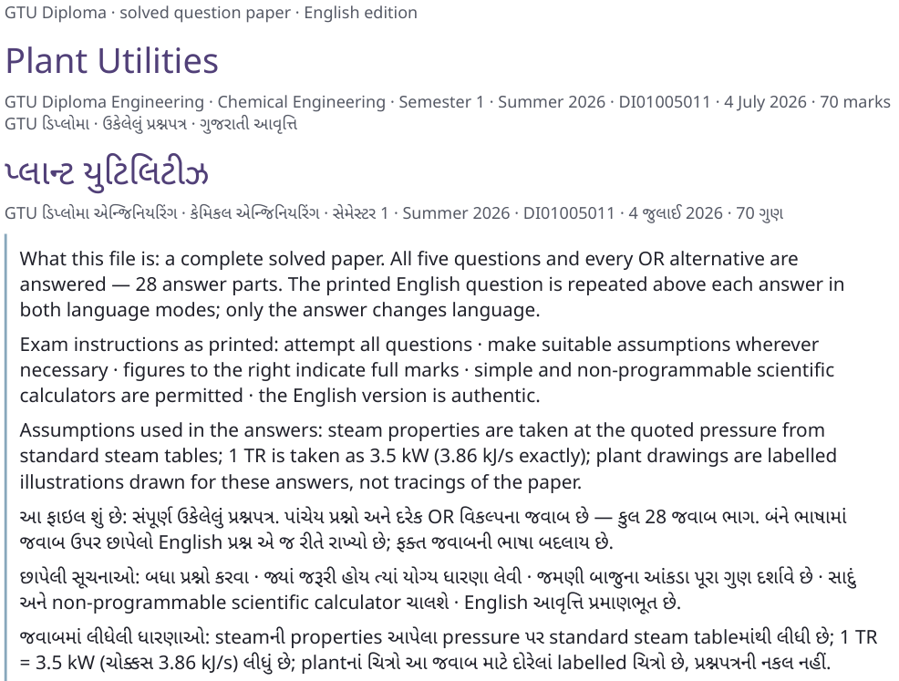
Question 1
Q1 · Plant utilities, water disinfection and lime–soda softening
Q.1 (a) · List six utilities in chemical plant · 3 marks
Utilities are the services — not the product — that a chemical plant must supply for its process to run. Six of them, with what each one is used for:
![Q.1 (a): preserved source formula, table or diagram, page 1. Extracted text context (formula notation may be incomplete): No. Utility Use in the plant 1 Water (raw, filtered, soft, demineralised, cooling) boiler feed, cooling tower make-up, process water, washing 2 Steam (saturated and superheated, at several pressures) heating of reactors and reboilers, distillation, ejectors, tracing 3 Electricity (power and lighting) pumps, compressors, agitators, instrumentation, lighting 4 Compressed air and instrument air pneumatic valves and actuators, tools, packing and cleaning 5 Fuel (coal, fuel oil, natural gas) fired heaters, boilers, furnaces, incinerators](summer-2026.assets/0001.webp)
6 Inert gas (nitrogen, CO2) tank blanketing, purging before maintenance, inert atmosphere for flammable material
Example: a distillation column needs steam in the reboiler, cooling water in the condenser, electricity for the reflux pump, instrument air for the control valve, and nitrogen for blanketing the reflux drum — five utilities for one unit, which is why utilities are planned before the plant layout.
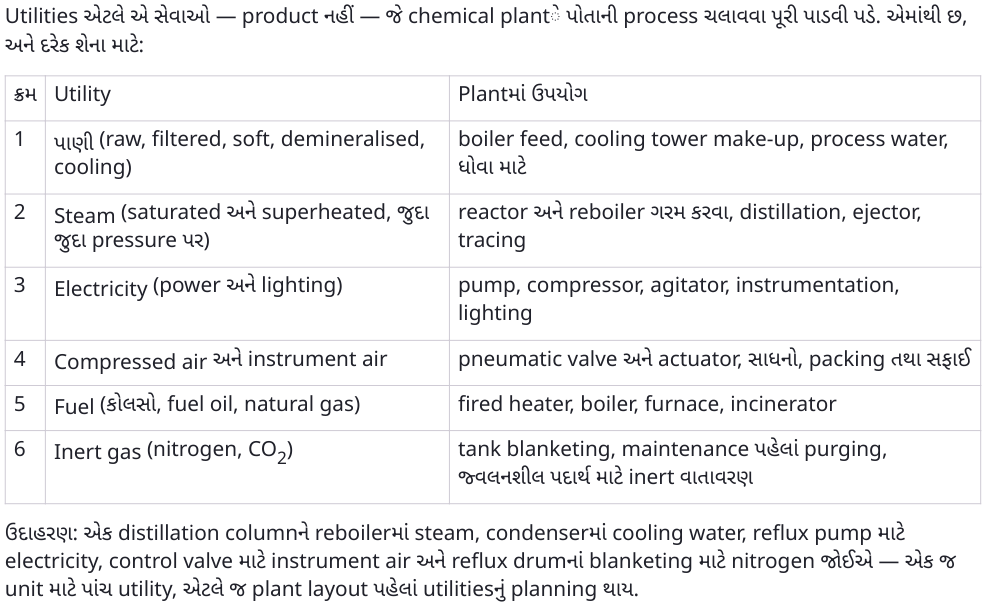
Q.1 (b) · Write down the conventional methods to remove bacteria and micro-organism from water. and Explain any one in detail · 4 marks
Conventional methods
Method How it kills or removes the organism Typical use
Boiling heat at 100 °C coagulates the cell protein — kills all bacteria and cysts in 5–10 minutes
household and small-scale drinking water
Chlorination free chlorine (HOCl) oxidises the cell wall and the enzymes
municipal water, cooling water, plant water distribution
same as chlorine, but a cheaper and slower source
rural supply, wells, swimming pools
Bleaching powder / chloramine
Ozone treatment ozone is a stronger oxidiser than chlorine and breaks the cell wall
bottling plants and modern municipal plants
UV irradiation ultraviolet light at 254 nm damages the DNA so the cell cannot multiply
small and medium units, pharma and food plant
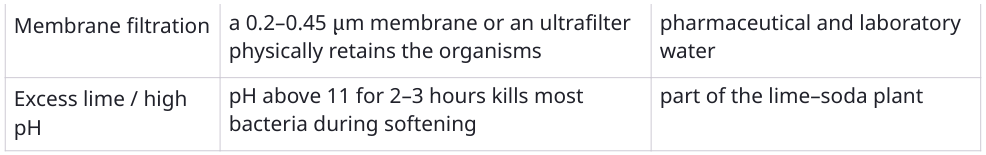
One method in detail — chlorination
Chlorination is the addition of chlorine gas, bleaching powder or sodium hypochlorite to water in a dose that leaves a small free-chlorine residual after the demand of the water is satisfied. The active species is hypochlorous acid, HOCl, formed as Cl2 + H2O → HOCl + HCl. HOCl is a small neutral molecule, so it penetrates the cell wall and oxidises the enzyme system, and the cell dies.
Construction — part and purpose
• Chlorine cylinder and weighing scale — stores the gas and shows how much is being used, so the dose can be calculated.
• Chlorinator (rotameter type) — dissolves the gas in a small side stream of water and meters it, so a measured dose goes into the main.
• Mixing chamber or static mixer — gives the chlorine contact with the water, so a local high concentration does not occur.
• Contact tank (baffled, 30 minutes) — provides the contact time needed for the kill.
• Residual chlorine test kit (DPD) — proves the dose was right.
Working — step and reason
1. Step 1 — The chlorine demand of the water is found by a test (about 1–3 mg/L for clear water). Reason: the organic matter and ammonia in the water consume chlorine first, so the dose must cover the demand plus the residual.
2. Step 2 — A dose is set at demand + 0.2–0.5 mg/L residual and the chlorinator is adjusted. Reason: a residual proves that the water is protected until it is used, and 0.2 mg/L is enough to keep the mains safe without a taste.
3. Step 3 — The chlorinated water is held in the contact tank for about 30 minutes. Reason: the kill follows first-order kinetics, so contact time and concentration both count; 30 minutes at pH below 8 gives over 99.9 % kill.
4. Step 4 — The residual is tested and recorded. Reason: a falling residual at the far end of the mains shows a re-contamination or a dosing fault.
Worked example — dose of bleaching powder
A tank of 50 m3 of water needs a dose of 2 mg/L of available chlorine. The bleaching powder available contains 30 % available chlorine. Find the quantity to be added.
Given: volume = 50 m3 = 50 × 1000 = 50 000 litre · dose = 2 mg/L · bleaching powder strength = 30 %
Chlorine needed = dose × volume = 2 mg/L × 50 000 L
Chlorine needed = 100 000 mg = 100 g
Bleaching powder required = 333 g
Sanity check: 333 g of powder in 50 m3 is about 6.7 g per m3, which is a normal figure for well water — reasonable.
Limitations
• Chlorine forms trihalomethanes with the organic matter in the water, which are carcinogenic, so the dose must be limited and the organic load removed first.
• Chlorine does not kill Cryptosporidium cysts reliably, and it fails at high pH because HOCl converts to the much weaker OCl−.
• Chlorine gas is poisonous, so the cylinder room needs ventilation, a gas mask and a scrubber.
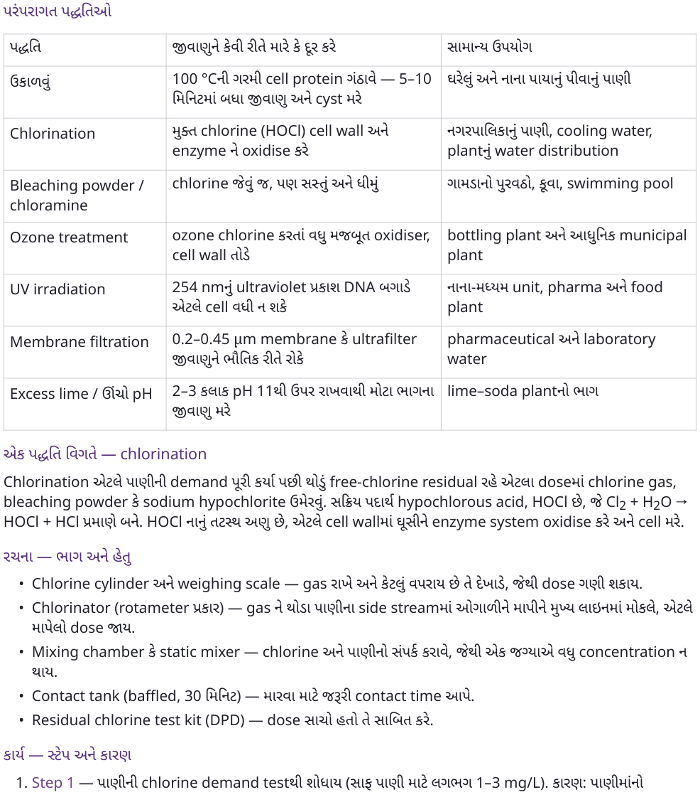
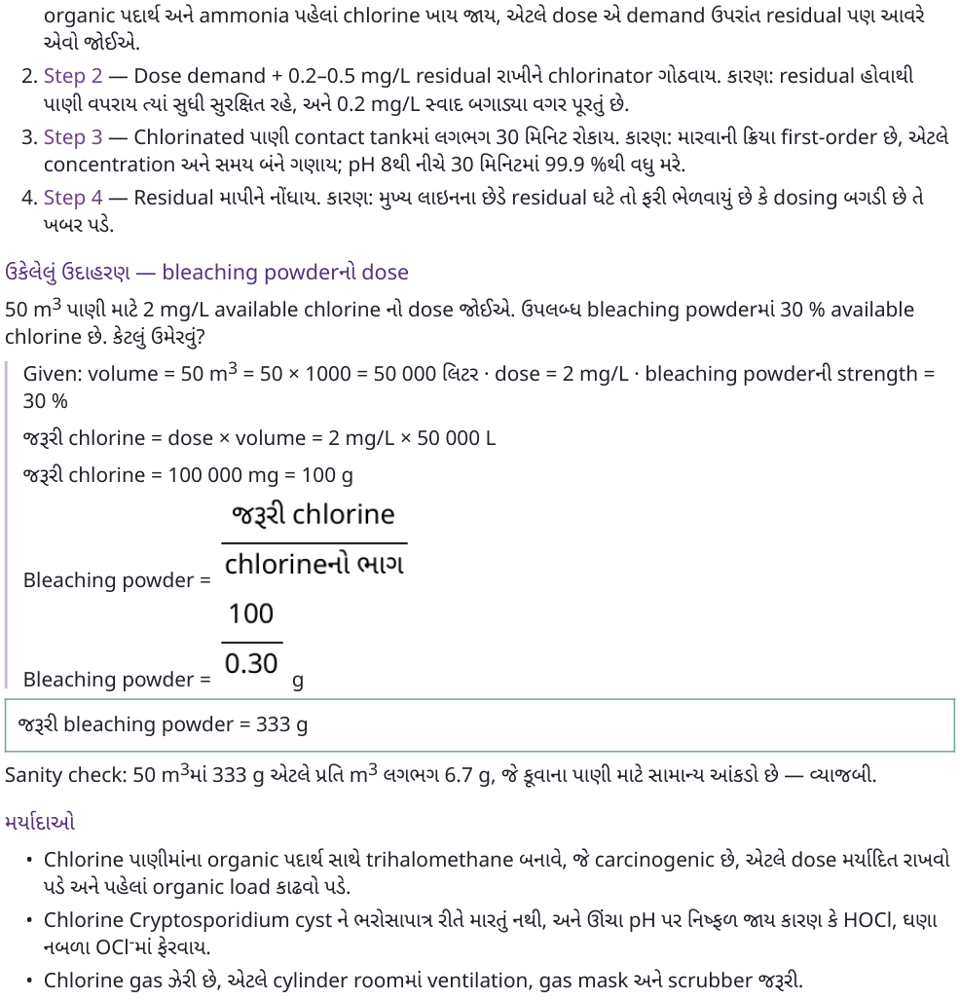
Q.1 (c) · Draw neat and well labeled diagram of cold lime soda process · 7 marks
Purpose
The cold lime–soda process removes both carbonate and non-carbonate hardness from water at ordinary temperature (20–30 °C) by precipitating calcium and magnesium as insoluble compounds. Lime Ca(OH)2 removes the bicarbonate hardness and the magnesium, and soda ash Na2CO3 removes the sulphate and chloride hardness.
Reactions
Ca(HCO3)2 + Ca(OH)2 → 2CaCO3↓ + 2H2O
Mg(HCO3)2 + 2Ca(OH)2 → Mg(OH)2↓ + 2CaCO3↓ + 2H2O
CaSO4 + Na2CO3 → CaCO3↓ + Na2SO4
Neat labelled diagram

Fig. 1.1 · Cold lime–soda softener — raw water inlet, chemical mixer with slow stirrer, flocculation and settling tank, sludge blow-down, pressure sand filter and soft-water outlet.
Construction — part and purpose
Part Purpose
Raw water inlet and flow meter measures the quantity so the lime and soda dose can be fixed in proportion
Lime and soda feed (dry feeder or slurry tank)
adds the chemicals in a measured dose
Chemical mixer with slow stirrer mixes the chemicals with the water so the reaction starts and the pH rises
Flocculation and settling tank gives time for CaCO3 and Mg(OH)2 to grow into flocs and settle as sludge
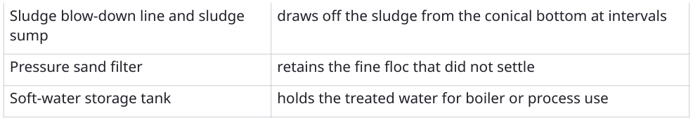
Working — step and reason
1. Step 1 — Raw water enters the chemical mixer, where the lime and soda doses are added. Reason: the dose is calculated from the analysed hardness, so the correct quantity of each chemical is added.
2. Step 2 — The mixture passes into the settling chamber and the stirrer speed is reduced. Reason: slow stirring lets the tiny particles collide and grow into flocs that settle; fast stirring would break them up.
3. Step 3 — The precipitate settles and the sludge is blown down from the bottom. Reason: the sludge occupies volume and would otherwise be carried over with the water.
4. Step 4 — The clear overflow goes to the pressure sand filter. Reason: fine floc that did not settle in the tank is trapped here, and the filter also removes turbidity.
5. Step 5 — Filtered water is stored, with residual hardness of about 30–50 ppm. Reason: the cold process is limited by the solubility of CaCO3, so zero hardness is not possible at this temperature.
Worked example — lime and soda requirement
Water contains Ca(HCO3)2 = 81 mg/L and CaSO4 = 68 mg/L. Find the lime and soda needed per 1000 litre, taking the molecular masses as Ca(OH)2 = 74, Ca(HCO3)2 = 162, CaSO4 = 136 and Na2CO3 = 106.
Given: Ca(HCO3)2 = 81 mg/L · CaSO4 = 68 mg/L · volume = 1000 L
Lime: Ca(HCO3)2 + Ca(OH)2 → 2CaCO3 + 2H2O
Soda: CaSO4 + Na2CO3 → CaCO3 + Na2SO4
For 1000 L: lime = 37 g, soda = 53 g
Lime Ca(OH)2 = 37 g and soda Na2CO3 = 53 g per 1000 litre
Sanity check: 37 mg/L of lime is about 1 mmol/L, which matches 81 mg/L of calcium bicarbonate (0.5 mmol/L) one for one — correct.
Limitations
• Zero hardness cannot be reached; 30–50 ppm remains, so the water is still not good enough for a high-pressure boiler without further treatment.
• Sludge is bulky and holds a lot of water, so disposal is the main running cost.
• Excess lime raises the pH and can itself cause scale and foaming in the boiler, so the dose has to be tested and adjusted every shift.
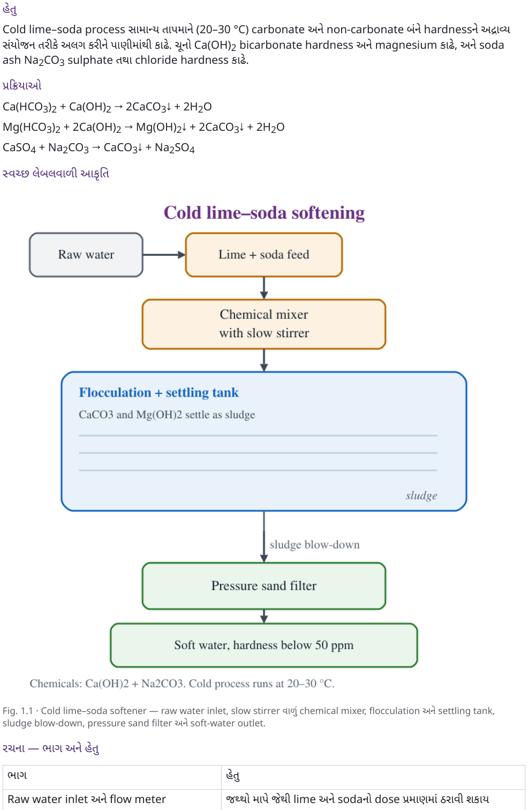
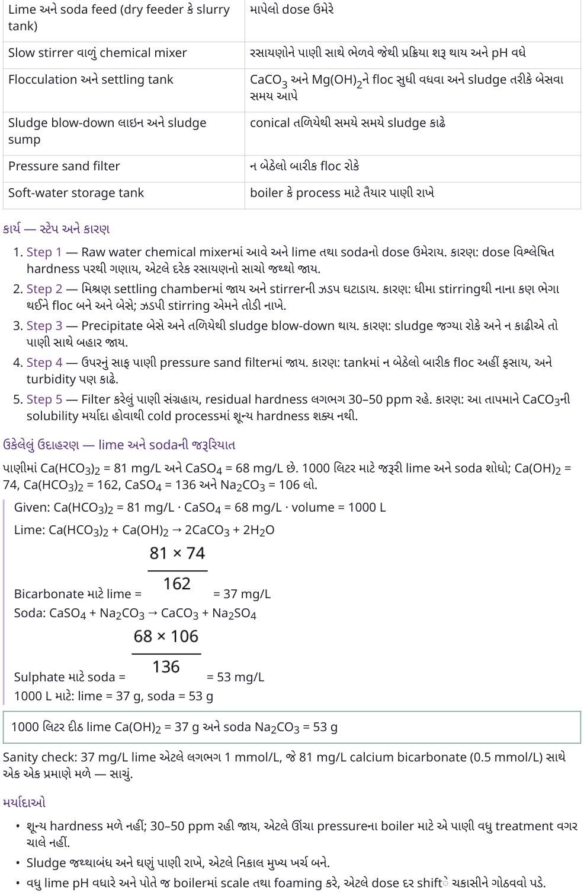
Q.1 (c) · Draw neat and well labeled diagram of Hot lime soda Process. · OR · 7 marks
Purpose
The hot lime–soda process works on the same chemistry as the cold process, but at 90–110 °C. Because the reactions are faster and the solubility of CaCO3 and Mg(OH)2 falls at higher temperature, the residual hardness is lower (about 15–25 ppm), the sludge is denser, and the same output needs a smaller plant.
Reactions
Ca(HCO3)2 + Ca(OH)2 → 2CaCO3↓ + 2H2O
MgSO4 + Ca(OH)2 → Mg(OH)2↓ + CaSO4, and the CaSO4 so formed is removed by Na2CO3: CaSO4 + Na2CO3 → CaCO3↓ + Na2SO4
Neat labelled diagram
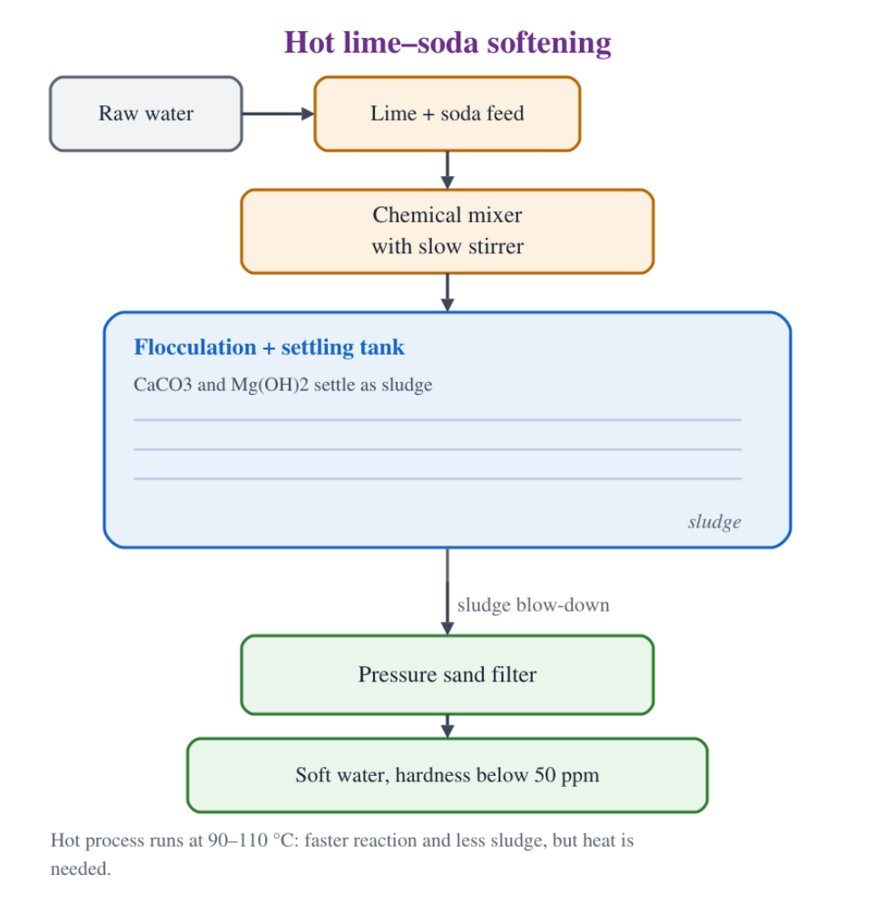
Fig. 1.2 · Hot lime–soda softener — chemical mixer, heater (90–110 °C), settling tank with sludge blow-down and sand filter.
Construction — part and purpose
![Q.1 (c) OR: preserved source formula, table or diagram, page 11. Extracted text context (formula notation may be incomplete): Part Purpose Chemical mixer with slow stirrer mixes raw water with lime and soda slurry so the reaction starts Steam heater / deaerating heater raises the temperature to 90–110 °C, which speeds up the reaction and removes dissolved gases Reaction and settling tank gives the floc time to grow and settle; the hot dense sludge settles faster than cold sludge Sludge blow-down and sludge sump removes the CaCO3 and Mg(OH)2 sludge Pressure sand filter retains the fine floc carried over from the settling tank Soft-water storage / boiler feed tank holds water at 15–25 ppm hardness for the boiler](summer-2026.assets/0015.webp)
Working — step and reason
1. Step 1 — Raw water is mixed with the lime and soda dose in the mixer. Reason: the dose is calculated from the hardness analysis, so the correct quantity of each chemical is added.
2. Step 2 — The mixture is heated with steam to 90–110 °C. Reason: at higher temperature the reaction rate rises and the solubility of CaCO3 falls, so more hardness comes out of solution.
3. Step 3 — The hot mixture enters the settling tank where the flocs grow and settle quickly. Reason: hot water has a lower viscosity, so particles settle faster and the tank can be smaller.
4. Step 4 — Sludge is blown down and the clear water is filtered. Reason: the dense hot sludge is easy to filter, so less water is lost with it.
5. Step 5 — The softened water goes to the boiler feed tank at 15–25 ppm hardness. Reason: this water is good enough for a medium-pressure boiler, and it is already hot, which saves fuel in the boiler.
Cold and hot process compared

Worked example — steam needed to heat the water
A hot lime–soda plant treats 10 000 kg/h of water from 25 °C to 95 °C. Find the steam needed at 2 bar, where hfg = 2202 kJ/kg. Take cp of water = 4.18 kJ/kg·K and allow 5 % heat loss.
Given: m = 10 000 kg/h · ΔT = 95 − 25 = 70 K · cp = 4.18 kJ/kg·K · hfg = 2202 kJ/kg · loss = 5 %
Formula: Q = m · cp · ΔT
Substitute: Q = 10 000 × 4.18 × 70 = 2 926 000 kJ/h
With 5 % loss: Q = 2 926 000 × 1.05 = 3 072 300 kJ/h
Steam required ≈ 1395 kg/h ≈ 1.4 t/h
Sanity check: heating 10 t/h of water by 70 K is a large duty, and 1.4 t/h of steam is about the right order — the steam mass is roughly one-seventh of the water mass.
Limitations
• Heating costs money, so the process is economical only where the softened water is boiler feed and would have to be heated anyway.
• A hot plant needs insulated vessels and more careful operation, so the capital cost is higher than the cold process.
• The residual hardness is still not zero, so phosphate or ion-exchange polishing is needed for a high-pressure boiler.
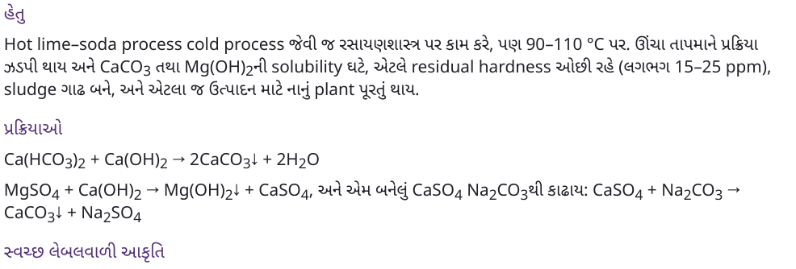
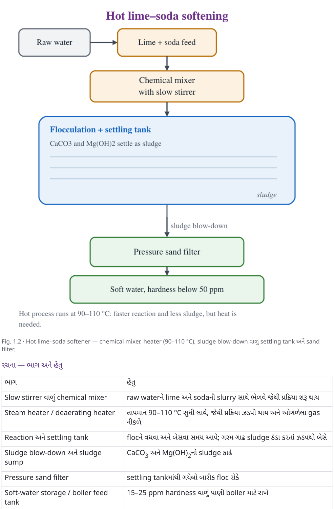
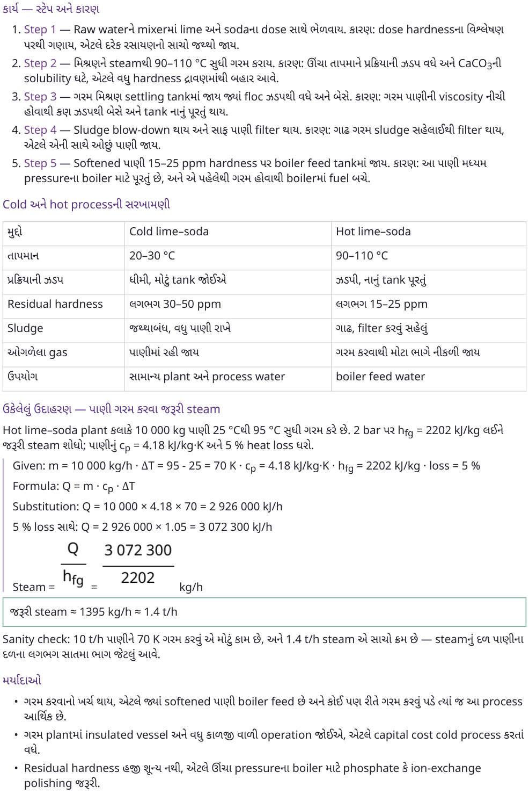
Question 2
Q2 · Sources of water, ozone/UV disinfection, zeolite and ion exchange
Q.2 (a) · List sources of water with suitable examples · 3 marks
Water for a chemical plant comes from four natural sources. Each one has a different quality, and therefore a different treatment cost.
![Q.2 (a): preserved source formula, table or diagram, page 15. Extracted text context (formula notation may be incomplete): Source Examples Quality and treatment needed river (Narmada, Tapi), lake, canal, reservoir turbid, coloured, high organic matter and bacteria; needs coagulation, settling, filtration and disinfection Surface water dug well, bore well, tube well, spring clear and free of bacteria, but hard (dissolved Ca and Mg); needs softening, sometimes iron removal Ground water roof catchment, rainwater harvesting tank very soft and low in dissolved solids, but seasonal and slightly acidic; needs only filtration and disinfection Rain water Sea water Arabian Sea, Gulf of Khambhat very high total dissolved solids, about 35 000 ppm; needs desalination (RO or multi-stage flash) before use, only for cooling or after treatment](summer-2026.assets/0021.webp)
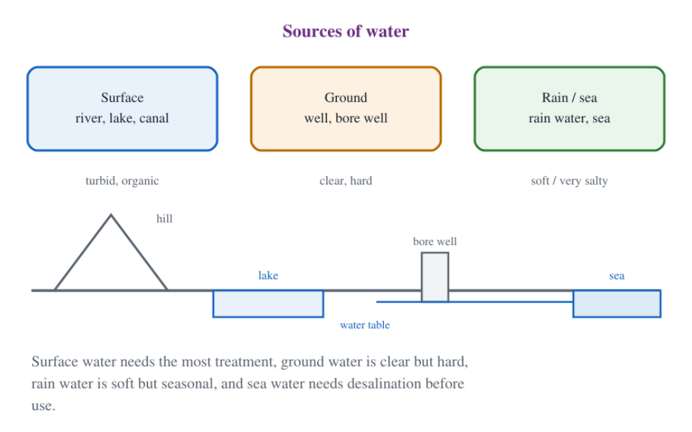
Fig. 2.1 · Surface, ground, rain and sea water with their typical quality.
Example: a plant at Ankleshwar takes clarified river water for cooling (surface source), bore-well water for the boiler (after softening, because it is hard), and harvested rain water for the laboratory, where very low dissolved solids matter.
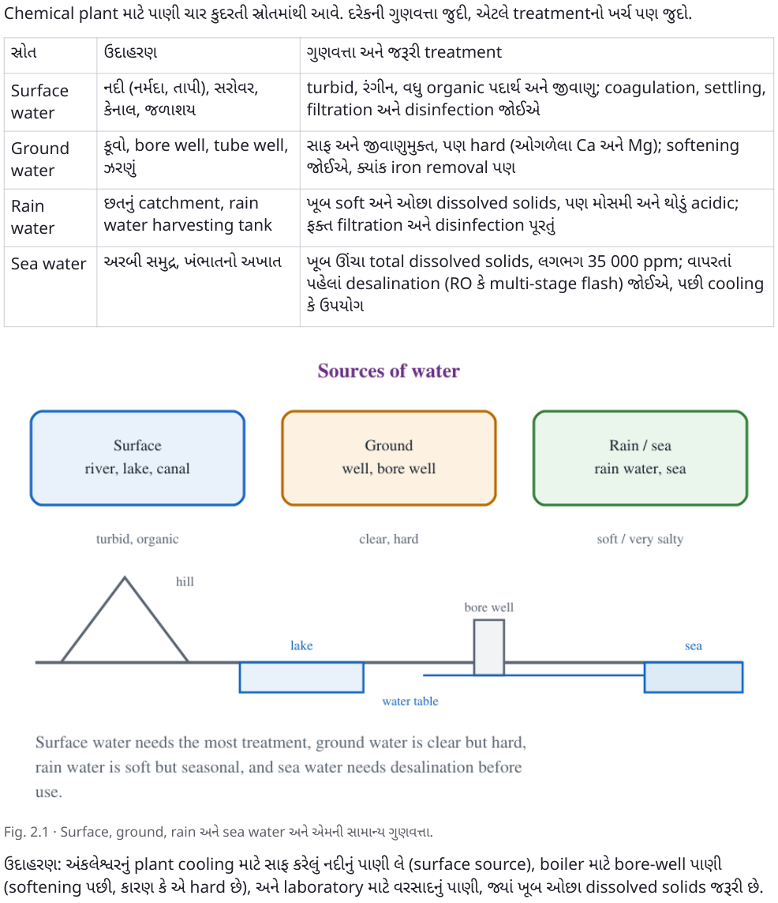
Q.2 (b) · Explain Sterilization of water using ozone · 4 marks
Definition
Ozone sterilisation is the disinfection of water by bubbling ozone, O3 through it. Ozone is an unstable allotrope of oxygen with a very high oxidation potential (2.07 V, higher than chlorine at 1.36 V), so it attacks the cell wall and the cell membrane of bacteria, viruses and cysts and destroys them within seconds.
Construction of the plant — part and purpose
![Q.2 (b): preserved source formula, table or diagram, page 17. Extracted text context (formula notation may be incomplete): Part Purpose Air dryer and filter removes moisture and dust, because damp air gives less ozone and attacks the electrodes Ozone generator (silent discharge) a high-voltage AC discharge across a dielectric gap converts O2 into O3 Injector / venturi or diffuser mixes the ozone gas into the water as fine bubbles, because gas-liquid contact decides the transfer Contact column (2–4 m of water) gives 5–15 minutes of contact for the kill and for the oxidation of iron, manganese and taste compounds Off-gas destructor destroys the ozone that leaves the column, because ozone is toxic in the working area Residual ozone monitor proves that enough ozone was dosed and that the excess has decayed before the water is used](summer-2026.assets/0024.webp)
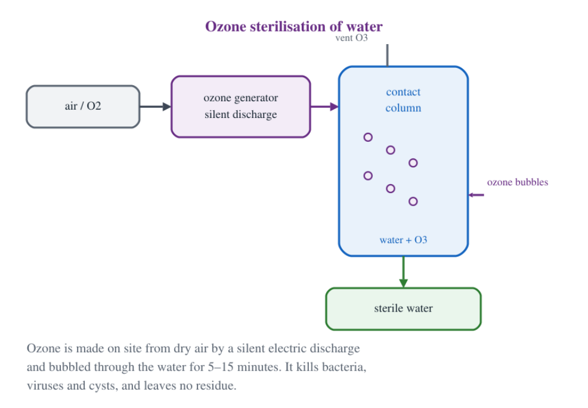
Fig. 2.2 · Ozone plant — generator, contact column and sterile water outlet.
Working — step and reason
1. Step 1 — Air or oxygen is dried and filtered. Reason: moisture in the feed reduces the ozone yield and corrodes the electrodes.
2. Step 2 — The dry air passes through the silent-discharge generator, where a high-voltage discharge splits O2 into oxygen atoms which recombine as O3. Reason: only a high-energy discharge can break the strong O=O bond.
3. Step 3 — The ozone-air mixture is drawn into the water by a venturi injector. Reason: the transfer of ozone into water is fast only when the gas is broken into small bubbles with a large surface area.
4. Step 4 — The water passes up a contact column for 5–15 minutes. Reason: the kill and the oxidation of iron and organics need contact time; the column also gives the pressure needed to dissolve the ozone.
5. Step 5 — The treated water leaves, and the surplus ozone is destroyed in the off-gas destructor. Reason: ozone irritates the lungs, so it must not escape into the plant.
Worked example — ozone dose
A bottling plant treats 20 m3/h of water at an ozone dose of 1.5 g/m3. The generator produces 100 g/h of ozone from air. Check whether one generator is enough, and give the residual if the demand of the water is 1.1 g/m3.
Given: flow = 20 m3/h · dose applied = 1.5 g/m3 · generator capacity = 100 g/h · demand = 1.1 g/ m3
Ozone needed = flow × dose = 20 × 1.5 = 30 g/h
Generator capacity 100 g/h > 30 g/h, so one generator is enough
Residual = dose − demand = 1.5 − 1.1 = 0.4 g/m3
One 100 g/h generator is sufficient; residual ozone ≈ 0.4 g/m3
Sanity check: 0.4 g/m3 = 0.4 mg/L residual, which is the usual design figure for ozone (0.2–0.5 mg/L) — correct.
Advantages and limitations
• Ozone is the strongest of the common disinfectants, it kills cysts that chlorine cannot, and it leaves no residue and no chlorinated by-product, because it decomposes back to oxygen.
• It also removes colour, taste, odour, iron and manganese, so one step does several jobs.
• But it gives no protection after treatment, so the water must be used at once; and the plant is costly because ozone has to be generated on site — it cannot be stored.
• Ozone is toxic and corrosive, so the generator room needs ventilation and the off-gas must be destroyed.
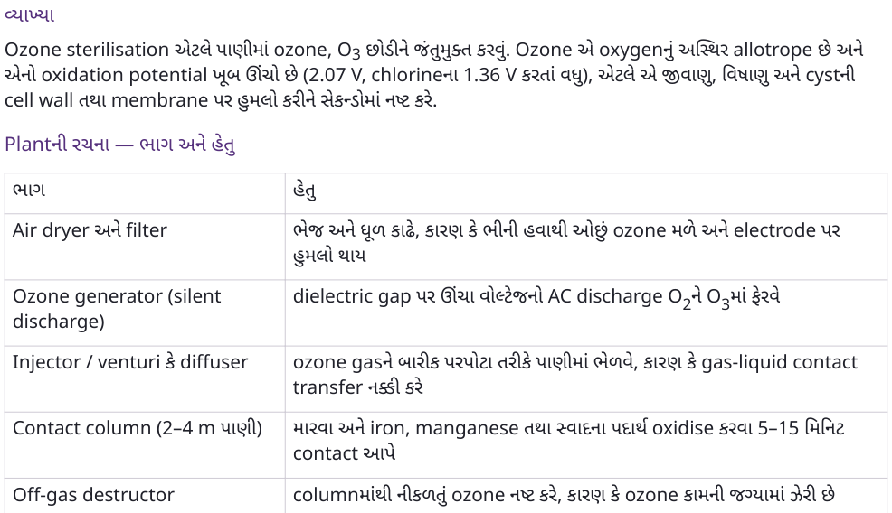
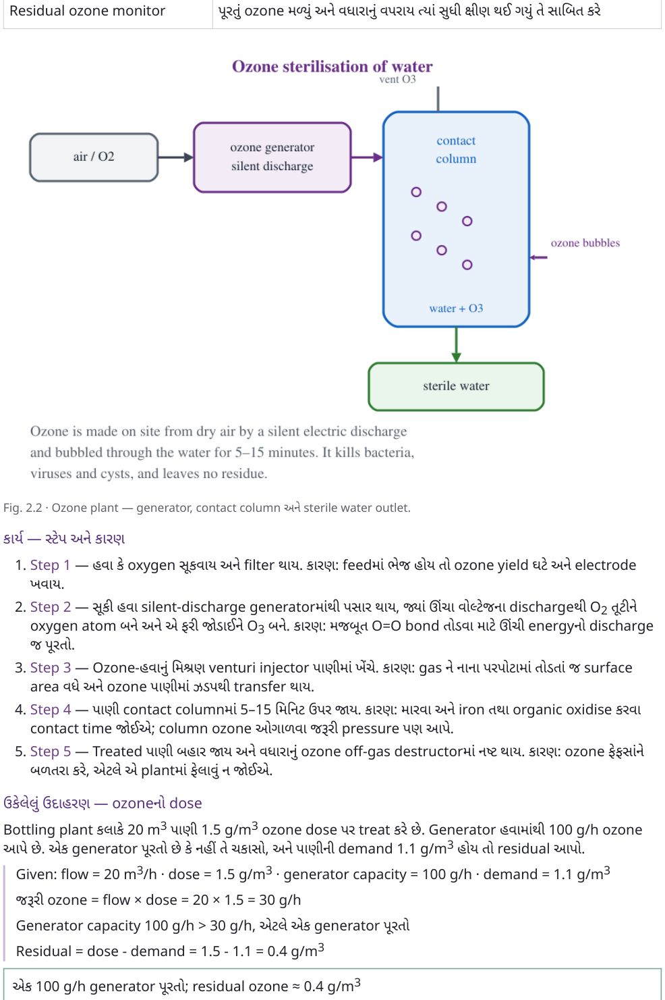
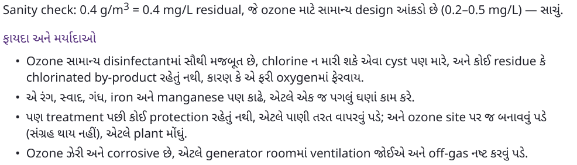
Q.2 (c) · Explain zeolite process in Detail. · 7 marks
Definition and principle
The zeolite process (base-exchange or ion-exchange softening) removes the hardness of water by exchanging the calcium and magnesium ions of the water for the sodium ions held on a zeolite bed. Zeolite is a naturally occurring or synthetic sodium alumino-silicate, Na2O·Al2O3·nSiO2; the synthetic resin form is called permutit. Because sodium salts are soluble, the water leaves the bed soft — there is no precipitate at all.
Reactions
Na2Z + Ca(HCO3)2 → CaZ + 2NaHCO3
Na2Z + CaSO4 → CaZ + Na2SO4
Na2Z + MgCl2 → MgZ + 2NaCl
Regeneration: CaZ + 2NaCl → Na2Z + CaCl2
Construction — part and purpose
Part Purpose
Zeolite bed in a steel vessel (1–2 m deep)
the exchange medium; its capacity is about 30 000 to 60 000 litre of water per m3 of bed per cycle
Support gravel and strainers carry the bed and let the water pass without carrying the zeolite out
Hard water inlet with a flow meter and control valve
sets a flow that gives the required contact time
Brine tank and ejector (10 % NaCl) regenerates the bed when it is exhausted
Backwash and rinse lines remove dirt and the spent brine before the next run
Soft water outlet and hardness test point
proves that the water leaving is soft
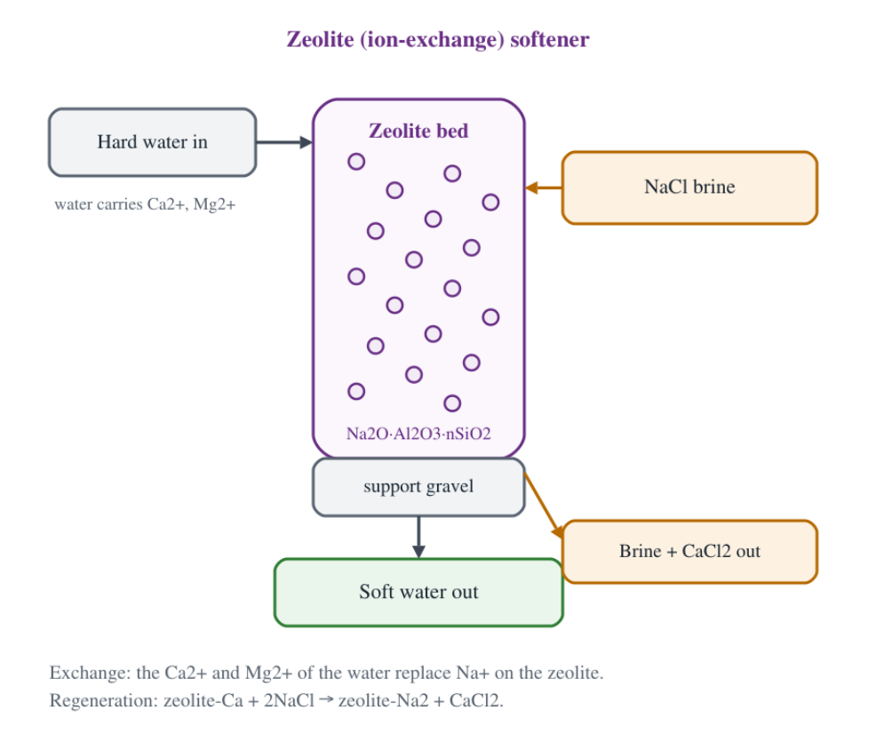
Fig. 2.3 · Zeolite softener — hard water in, zeolite bed, support gravel, brine regeneration and soft water out.
Working — step and reason
1. Step 1 · Service — Hard water passes down through the zeolite bed, and Na+ on the zeolite is exchanged for Ca2+ and Mg2+. Reason: the zeolite has a greater affinity for the divalent ions, so the exchange goes forward.
2. Step 2 · Monitoring — The hardness of the outlet is tested at intervals. Reason: the bed has a fixed capacity, and the first rise in outlet hardness marks the break-through, after which the water would be hard again.
3. Step 3 · Backwash — Water is passed upwards to loosen and clean the bed. Reason: the bed compacts during service and collects dirt; backwashing regains the void space for the brine.
4. Step 4 · Regeneration — 10 % NaCl brine is passed slowly through the bed, so the Ca2+ and Mg2+ go into solution and the zeolite returns to the Na form. Reason: the high concentration of sodium drives the equilibrium backwards.
5. Step 5 · Rinse — The bed is rinsed with soft water until the outlet is free of chloride. Reason: any brine left in the bed would make the first soft water salty and would add chloride to the boiler feed.
Worked example — ion-exchange capacity
A zeolite softener of 2 m3 bed has a capacity of 50 000 litre of water per m3 of bed per cycle for water of 300 ppm hardness. A plant sends water of 450 ppm hardness. Find the water that can be softened per cycle, and the salt needed for regeneration at 0.2 kg NaCl per m3 of bed.
Given: bed volume = 2 m3 · rated capacity = 50 000 L/m3 at 300 ppm · actual hardness = 450 ppm ·
salt = 0.2 kg/m3 of bed
Capacity in hardness removed = 50 000 × 300 = 1.5 × 107 mg/L·L per m3 of bed
For a 2 m3 bed = 2 × 33 333 = 66 666 L ≈ 66.7 m3
Salt = 0.2 × 2 = 0.4 kg per regeneration
Soft water per cycle ≈ 66.7 m3; salt for regeneration = 0.4 kg
Sanity check: harder water gives less soft water per cycle, as found (33 333 against 50 000 L/m3) — proportional to the ratio 300/450, correct.
Advantages
• Hardness falls to zero (2–5 ppm), which no lime–soda plant can achieve.
• The plant is compact and the process is automatic, so labour is low.
• No sludge is formed, so there is no disposal problem of the kind that lime–soda has.
• It works on water of any hardness, and the same bed works for many cycles.
Limitations
• It removes only hardness — total dissolved solids and alkalinity are not reduced, so the water is not demineralised.
• Water with turbidity, iron or manganese must be pre-treated, because these foul the bed.
• Brine is needed in quantity, and the spent brine (calcium chloride) is a disposal load; it is also corrosive and damages concrete if it is dumped on the floor.
• The process adds sodium salts to the boiler feed, which raises the dissolved solids and therefore the blow-down.
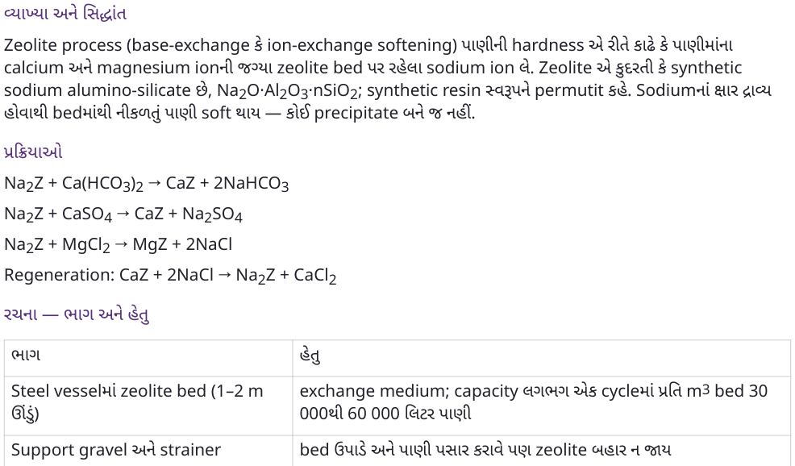
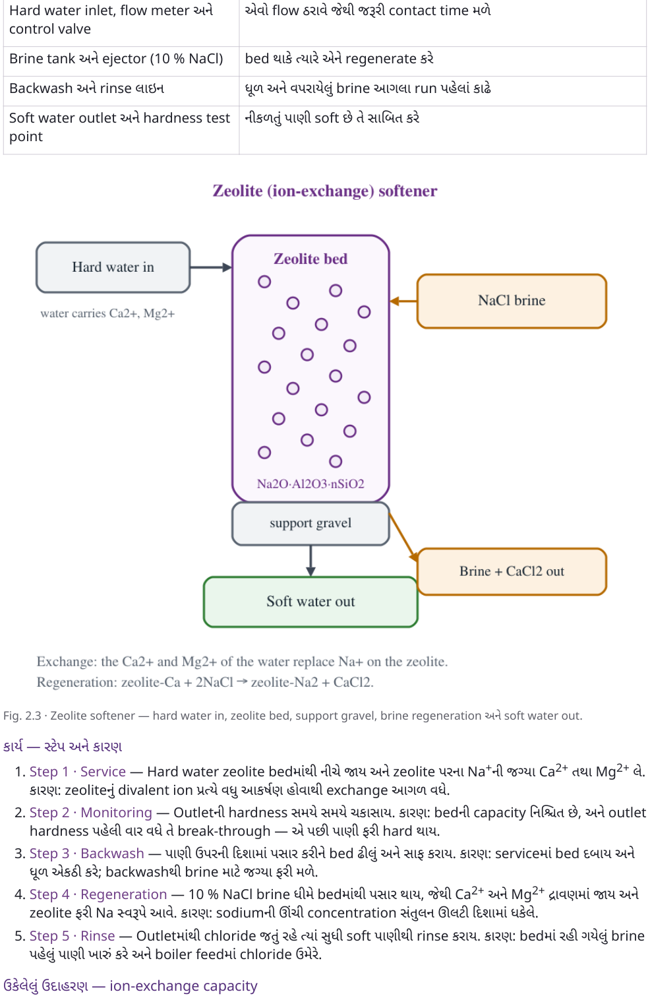
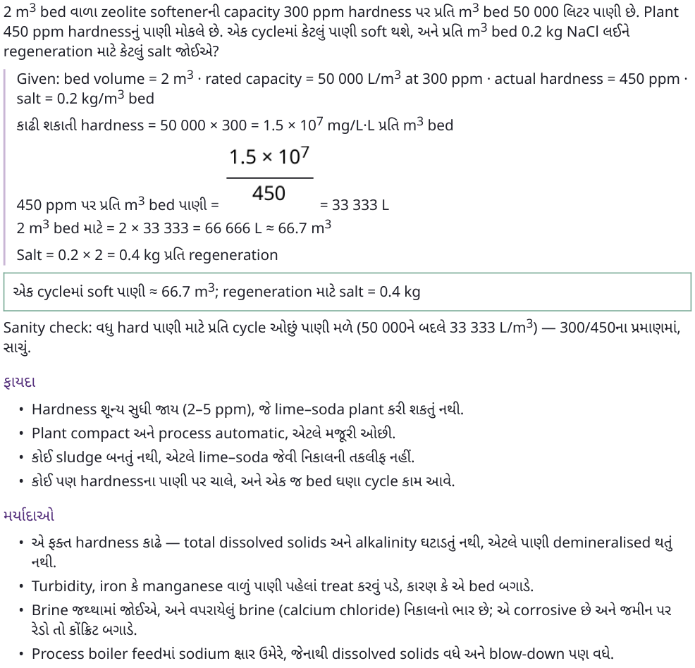
Q.2 (a) · List and Explain all water purification method. · OR · 3 marks
Water purification is done in a series of steps, each one removing a particular kind of impurity. The methods, in the order in which a plant uses them:
Method Removes In one line
Screening leaves, sticks, fish, floating matter
a bar screen or drum screen at the intake
Aeration dissolved iron, manganese, H2S, taste and odour
water is sprayed into air so the gases escape and the iron oxidises
colloidal clay, colour, turbidity alum or polyelectrolyte is added and slow stirring grows the flocs
Coagulation and flocculation
Sedimentation settleable floc and silt the water is held still so the floc settles as sludge
![Q.2 (a) OR: preserved source formula, table or diagram, page 25. Extracted text context (formula notation may be incomplete): Filtration fine suspended matter and part of the bacteria sand, anthracite or a pressure filter Softening hardness due to Ca and Mg lime–soda, zeolite or ion exchange Demineralisation all dissolved salts cation and anion exchange resins Disinfection bacteria, viruses, cysts chlorine, ozone or UV dissolved salts, especially from sea water pressure across a membrane, or evaporation Reverse osmosis / distillation](summer-2026.assets/0034.webp)
Example: river water is screened, aerated, coagulated with alum, settled, filtered, softened by zeolite and finally chlorinated. Bore-well water is clear, so it skips coagulation and goes straight to softening and disinfection.
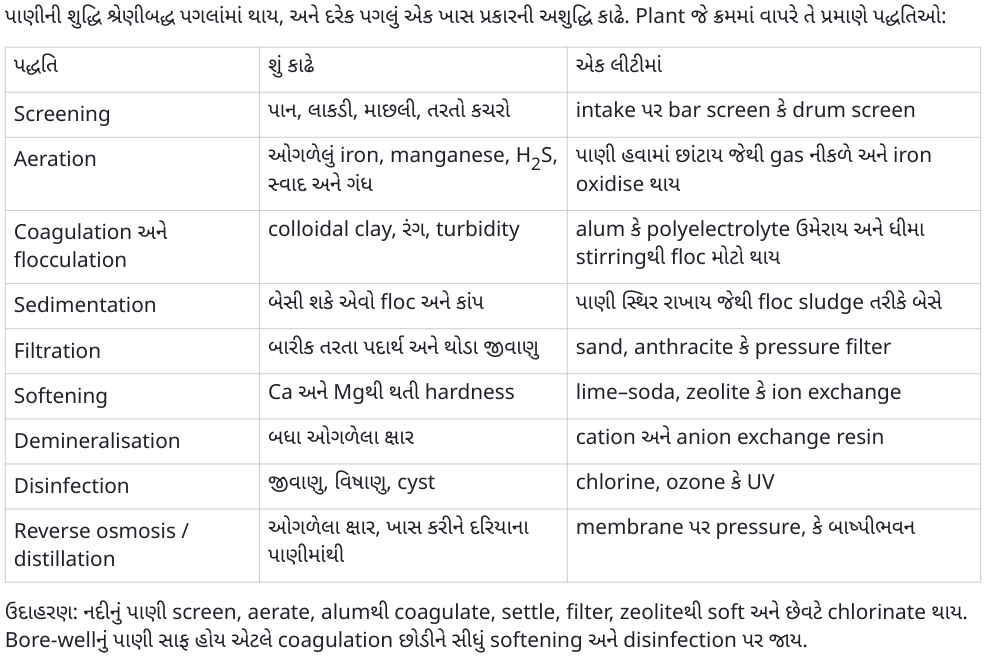
Q.2 (b) · Explain Sterilization of water using UV rays · OR · 4 marks
Definition
UV sterilisation is disinfection of water by passing it through a chamber where a low-pressure mercury lamp gives ultraviolet light at 254 nm. That wavelength is absorbed by the nucleic acid of the cell, and the energy damages the DNA so that the organism cannot replicate. The cell may still be alive but it can no longer multiply, so it cannot infect.
Construction — part and purpose
Part Purpose
![Q.2 (b) OR: preserved source formula, table or diagram, page 26. Extracted text context (formula notation may be incomplete): Pre-filter (5 µm cartridge) removes turbidity and particles, because a particle shields the microbes behind it UV chamber (stainless steel, polished inside) holds the water in a thin annulus around the lamp, so every drop is close to the lamp Low-pressure mercury lamp, 254 nm the source of the germicidal light; it has to be clean to pass the full output Quartz sleeve separates the lamp from the water but passes UV; quartz is used because ordinary glass absorbs UV Ballast and lamp monitor runs the lamp and shows that it is still emitting enough intensity Solenoid valve on the outlet shuts the flow if the lamp fails, so untreated water cannot pass](summer-2026.assets/0036.webp)
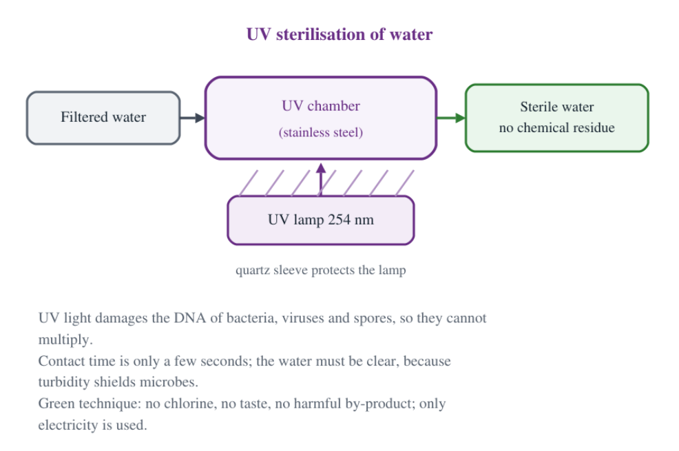
Fig. 2.4 · UV steriliser — pre-filter, UV chamber with quartz-sleeved lamp and sterile water outlet.
Working — step and reason
1. Step 1 — Water is filtered to below 1 NTU turbidity. Reason: turbidity and iron absorb and scatter UV, so the dose reaching the microbes would fall.
2. Step 2 — The water flows through the annular gap around the quartz sleeve in a thin film. Reason: UV travels only a short distance in water, so the layer must be thin for every drop to receive the dose.
3. Step 3 — The lamp gives 254 nm light and the water receives a dose of about 30–40 mJ/cm2 in a few seconds. Reason: 30 mJ/cm2 gives over 99.9 % inactivation of bacteria and most viruses.
4. Step 4 — The lamp intensity is monitored and the outlet valve closes on failure. Reason: UV leaves no residual, so there is no way to check the water afterwards — the protection must be on the lamp itself.
Worked example — contact time in the chamber
A UV chamber holds 4 litre of water and the flow is 2 m3/h. Find the contact time, and say whether it is enough for a dose of 30 mJ/cm2 at an intensity of 10 mW/cm2.
Given: chamber volume = 4 L · flow = 2 m3/h = 2000 L/h · intensity = 10 mW/cm2 · required dose = 30 mJ/cm2
Contact time = 0.002 h = 7.2 s
Dose = intensity × time = 10 mW/cm2 × 7.2 s
Dose = 72 mJ/cm2
Contact time = 7.2 s, and the dose delivered = 72 mJ/cm2 — more than the 30 mJ/cm2 required
Sanity check: a dose of 72 mJ/cm2 is over twice the minimum, which is what a real unit is designed for, since the lamp output falls with age and fouling.
Advantages and limitations
• No chemical is added, so there is no taste, no odour and no by-product such as trihalomethane; the water tastes the same as before.
• The contact time is only a few seconds, so the unit is compact and needs no contact tank.
• It kills bacteria, viruses and Cryptosporidium and Giardia cysts, which chlorine handles poorly.
• But it gives no residual protection, so it is used at the point of use; turbidity, iron and hardness scale shield the microbes and must be removed first; and the lamp ages, so it is replaced every 8 000–9 000 hours whether it has failed or not.
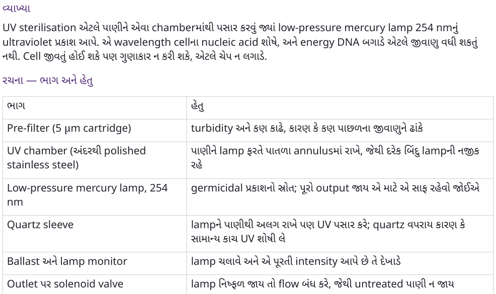
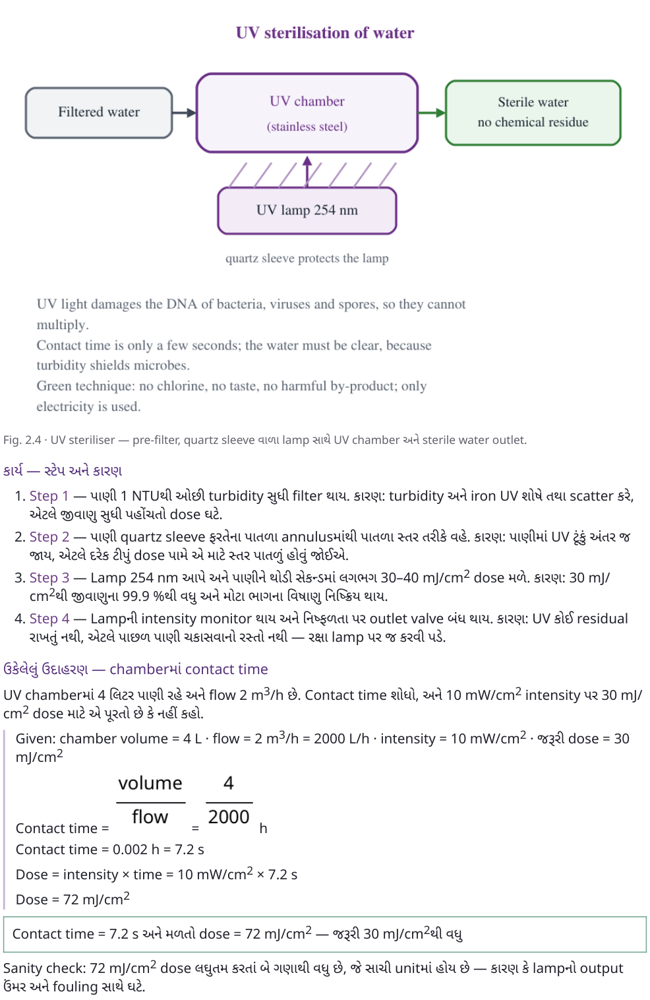
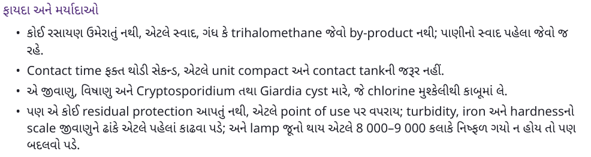
Q.2 (c) · Explain ion exchange process in detail · OR · 7 marks
Definition and principle
Ion exchange is the reversible exchange of ions between a solid resin and a solution passing through it. In water treatment, cation resin in the H+ form takes the Ca2+, Mg2+ and Na+ from the water and releases H+; then anion resin in the OH− form takes the SO42−, Cl− and HCO3− and releases OH−. The H+ and OH− combine to form water, so the water leaves with almost no dissolved salts — this is demineralisation.
Reactions
Cation: 2R–H + Ca2+ → R2–Ca + 2H+
Anion: R–OH + Cl− → R–Cl + OH−
Overall: H+ + OH− → H2O
Regeneration: R2–Ca + 2HCl → 2R–H + CaCl2, and R–Cl + NaOH → R–OH + NaCl
Construction — part and purpose
Part Purpose
Cation exchange vessel with resin bed removes the metallic cations and releases H+
Anion exchange vessel with resin bed removes the acid anions and releases OH−
Degasser (optional, between the two) removes the CO2 formed from bicarbonate, which reduces the load on the anion bed
Acid dosing and regeneration system (HCl or H2SO4)
regenerates the cation resin
Alkali dosing system (NaOH) regenerates the anion resin
Conductivity meter at the outlet proves the water quality; a rise in conductivity means break-through
Neutralisation pit for the spent regenerant
the spent acid and alkali are neutralised before disposal
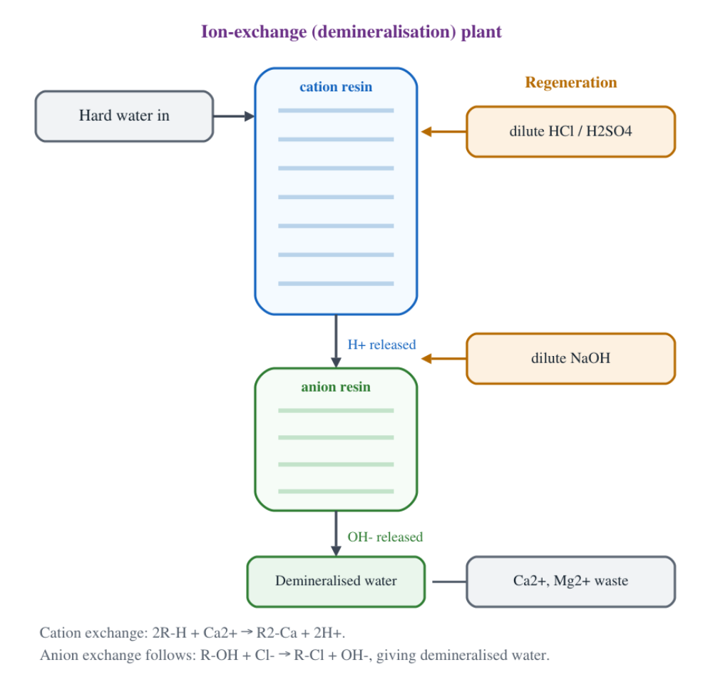
Fig. 2.5 · Ion-exchange demineralisation plant — cation bed, anion bed and regeneration with acid and alkali.
Working — step and reason
1. Step 1 · Cation exchange — Water passes down through the cation resin in the H form. Reason: the resin has a strong affinity for divalent cations, so Ca and Mg are held and an equivalent quantity of H+ is released.
2. Step 2 · Degassing — The carbon dioxide formed from bicarbonate is stripped in a degasser. Reason: CO2 is a gas dissolved in water, and removing it cheaply reduces the anion load and the alkali needed.
3. Step 3 · Anion exchange — Water passes through the anion resin in the OH form. Reason: the acid anions are held and OH− is released, which neutralises the H+ from the first bed.
4. Step 4 · Check quality — Conductivity is monitored continuously. Reason: demineralised water has a conductivity of only 0.1–1 µS/cm, so any leak of salt shows up at once.
5. Step 5 · Regeneration — When the conductivity rises, the beds are backwashed, regenerated with acid and alkali, and rinsed. Reason: the exchange is reversible, so the resin can be used for thousands of cycles.
Worked example — resin capacity and acid requirement
A cation bed holds 500 litre of resin of capacity 1.2 eq/L. The raw water has a total cation content of
5 meq/L. Find the water treated per cycle, and the 33 % HCl needed for regeneration at 1.5 times the theoretical quantity. Take the equivalent mass of HCl as 36.5 g/eq.
Given: resin = 500 L · capacity = 1.2 eq/L · cations = 5 meq/L = 0.005 eq/L · acid excess = 1.5 times · HCl equivalent mass = 36.5 g/eq
Total capacity = 500 × 1.2 = 600 eq
Water per cycle = 120 000 L = 120 m3
HCl needed = 1.5 × 600 × 36.5 = 32 850 g
Water treated per cycle = 120 m3; 33 % HCl required ≈ 99.5 kg
Sanity check: 99.5 kg of 33 % acid for 120 m3 is about 0.8 kg per m3 — the normal figure for a demineralisation plant, so the calculation is consistent.
Advantages
• It gives complete demineralisation, not just softening, so the water is suitable for high-pressure boilers and for pharmaceutical use.
• The plant is compact and the quality is monitored continuously, so it can be automatic.
• It works at ambient temperature and produces no sludge.
Limitations
• The resins are expensive and are fouled by chlorine, iron and organic matter, so the feed must be pre-treated.
• Acid and alkali are needed in quantity, and the spent regenerant is a corrosive waste that must be neutralised.
• The water is aggressive (low pH, no buffer) and attacks mild steel, so stainless steel or PVC-lined pipe is required.
• The process cannot remove uncharged matter such as silica, and colloidal silica passes through, which matters at very high boiler pressure.
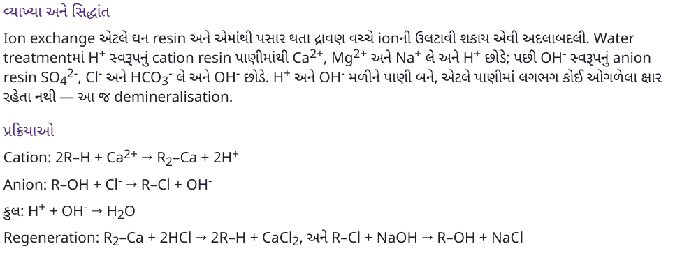
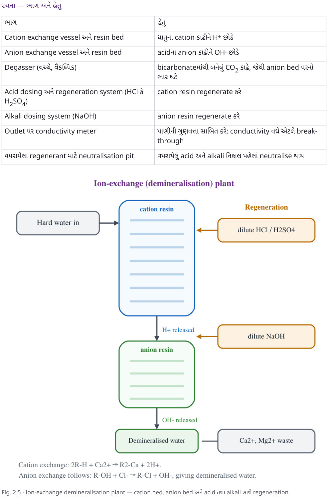
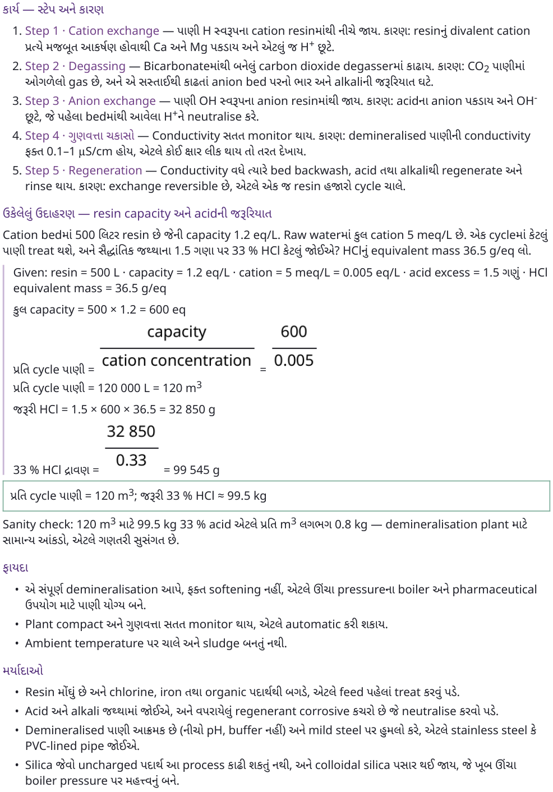
Question 3
Q3 · Steam generators, steam, locomotive and Lancashire boilers
Q.3 (a) · Draw well labeled diagram of steam generator · 3 marks
A steam generator (boiler) is a closed pressure vessel in which water is converted into steam by the heat of combustion. In a water-tube generator the water is inside the tubes and the hot gas is outside, which is the arrangement used for all modern high-capacity plants.
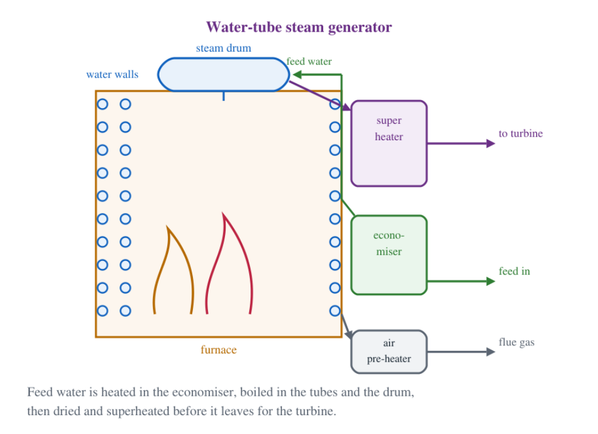
Fig. 3.1 · Water-tube steam generator — steam drum, water walls, furnace, superheater, economiser and air preheater.
The labelled parts, in one line each

Note: water tubes can take a much higher pressure than a fire-tube shell, so the water-tube layout is used above about 20 bar, and always where a large steam rate is needed.
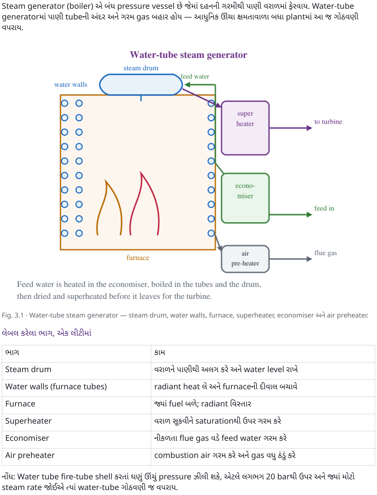
Q.3 (b) · Define Wet steam, Saturated Steam, Superheated steam · 4 marks
The three states, defined
Wet steam is steam that carries fine droplets of water in suspension — a two-phase mixture of dry
saturated vapour and water. Its dryness fraction x = mass of vapour / total mass, and it is always less than 1.
Saturated steam is steam in equilibrium with water at a given pressure. Its temperature is fixed by the pressure (saturation temperature), and any addition of heat at constant pressure simply evaporates more water instead of raising the temperature. Dry saturated steam has x = 1.
Superheated steam is steam heated above its saturation temperature at the same pressure. The difference between its actual temperature and the saturation temperature is the degree of superheat.
Comparison
![Q.3 (b): preserved source formula, table or diagram, page 36. Extracted text context (formula notation may be incomplete): Point Wet steam Saturated (dry) steam Superheated steam Dryness fraction x < 1 x = 1 x = 1, and T > Tsat Temperature T = Tsat for the pressure T = Tsat T > Tsat Behaviour on adding heat at constant pressure the droplets evaporate, T stays constant becomes superheated temperature rises Condition contains water droplets, so it is wet and gives up latent heat quickly no droplets dry and gas-like Use heating and sterilising where the latent heat is wanted process heating, evaporators steam turbines and engines, because no droplets means no blade erosion Typical figure x = 0.90–0.98 at the boiler outlet hg = 2674 kJ/kg at 1 bar 30–60 °C of superheat at the superheater outlet](summer-2026.assets/0051.webp)
Worked example — dryness fraction and superheat
Steam at 10 bar has a saturation temperature of 180 °C and hf = 763 kJ/kg, hfg = 2015 kJ/kg. (i) Find the enthalpy of wet steam with x = 0.95. (ii) A sample of steam at the same pressure is at 250 °C; find the degree of superheat.
Given: P = 10 bar · Tsat = 180 °C · hf = 763 kJ/kg · hfg = 2015 kJ/kg · x = 0.95 · actual temperature = 250 °C
Formula: h = hf + x · hfg
(i) h = 763 + 0.95 × 2015 = 763 + 1914.3
(i) h = 2677.3 kJ/kg
(ii) Degree of superheat = actual temperature − saturation temperature
(ii) = 250 − 180
(i) Wet steam enthalpy = 2677.3 kJ/kg · (ii) Degree of superheat = 70 °C
Sanity check: hg at 10 bar is 763 + 2015 = 2778 kJ/kg, so the wet steam at 2677 kJ/kg is below it — correct for x = 0.95.
Limitation and importance
Wet steam is a problem, not a goal: the droplets erode turbine blades and carry dissolved salts into the superheater, where they form scale. That is why steam is dried in the drum with a separator and
then superheated before it goes to a turbine.
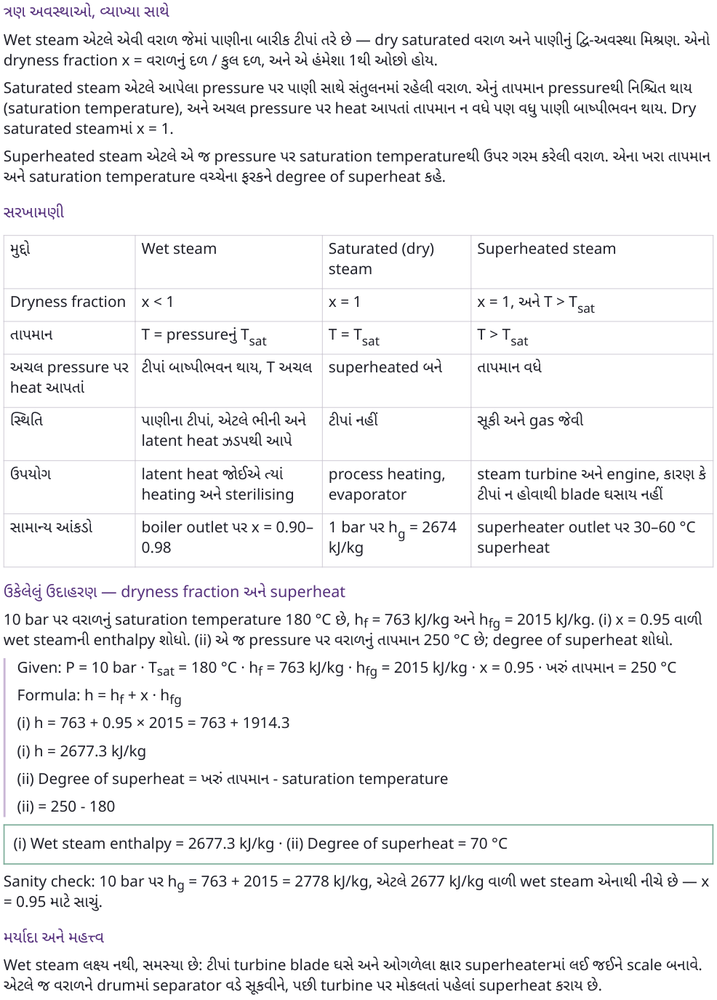
Q.3 (c) · Explain construction and working of Locomotive boiler with sketch · 7 marks
Definition and use
The locomotive boiler is a horizontal, multi-tubular fire-tube boiler with an internal firebox, developed for steam locomotives. It is compact, light, and able to make steam quickly, because the whole boiler is mounted on the engine frame and travels with it.
Construction — part by part
Part Material / shape Purpose
Shell (barrel) steel plate, cylindrical, about 1.5 m diameter and 4 m long
the pressure vessel that holds the water and steam
Fire box copper or steel, of rectangular section inside the shell at the front
the combustion space; surrounded by water on five sides, so the heat is absorbed
Fire grate cast iron bars at the bottom of the firebox
carries the burning coal, and the air comes up through it
Fire tubes (about 150– 250 tubes)
steel tubes of 50–70 mm diameter through the barrel
the hot gases pass through them and heat the surrounding water
Smoke box and chimney
at the rear end of the barrel collects the gas and takes it away; the blast pipe makes the draught
Steam dome on top of the barrel collects dry steam and keeps the droplets below
Safety valve, water gauge, pressure gauge
mountings on the shell protect the boiler and show the water level and pressure
Regulator and steam pipe
from the dome to the cylinders controls the steam to the engine
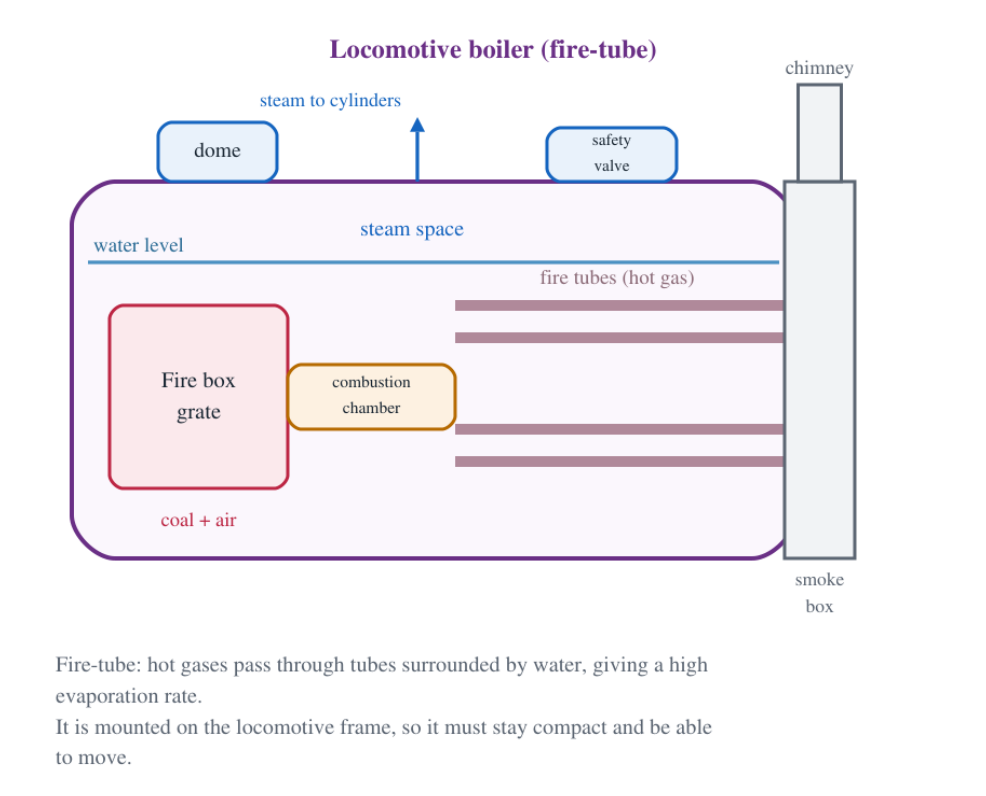
Fig. 3.2 · Locomotive boiler — fire box, grate, combustion chamber, fire tubes, smoke box, dome, safety valve and steam pipe to the cylinders.
Working — step and reason
1. Step 1 — Coal is burnt on the grate in the fire box. Reason: the fire box has a large radiant surface, so a lot of heat is transferred to the water around it.
2. Step 2 — The hot gases pass from the firebox through the combustion chamber and then through the fire tubes to the smoke box. Reason: passing through many small tubes gives a large heating surface in a short length, which is why the boiler is compact.
3. Step 3 — The gases leave up the chimney, and the exhaust steam from the cylinders is blown up the chimney through the blast pipe. Reason: the blast creates a partial vacuum in the smoke box, which pulls the air through the grate — the draught is free and needs no fan.
4. Step 4 — Water in the shell absorbs the heat and boils, and steam collects in the steam space and the dome. Reason: the dome is raised above the water level, so any droplets fall back and dry steam goes to the cylinders.
5. Step 5 — Feed water is added through the feed check valve and the level is watched in the water gauge. Reason: a low water level would uncover the firebox crown, which would collapse — the most dangerous failure of this boiler.
Worked example — evaporation rate
A locomotive boiler has a heating surface of 120 m2 and a coal firing rate of 1.2 t/h of coal of calorific value 30 MJ/kg. If the overall efficiency is 70 %, find the steam produced per hour, taking hg − hf,feed = 2400 kJ/kg.
Given: heating surface = 120 m2 · coal = 1.2 t/h = 1200 kg/h · CV = 30 000 kJ/kg · η = 0.70 · heat per
kg steam = 2400 kJ/kg
Heat available = mcoal × CV × η = 1200 × 30 000 × 0.70
Heat available = 2.52 × 107 kJ/h
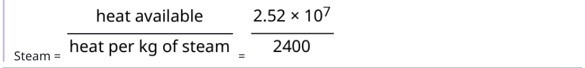
Steam produced ≈ 10 500 kg/h ≈ 10.5 t/h
Sanity check: the evaporation rate per m2 of heating surface is 10 500/120 = 87 kg/m2·h, which is high but normal for a locomotive boiler — it is designed for a forced draught and a high rate.
Advantages and limitations
• Compact, light and self-contained, with a high evaporation rate for its size, and free draught from the exhaust steam.
• The small water volume means steam can be raised quickly from cold — essential for a locomotive.
• But the small water volume is also a danger: the water level falls fast and the firebox crown can be uncovered, so the boiler is sensitive to the driver and to the feed.
• It cannot take more than about 15–20 bar because the shell is large, the firebox stays are highly stressed, and scale is hard to clean from the small tubes; it also cannot use coal efficiently and is limited to a single fuel bed.
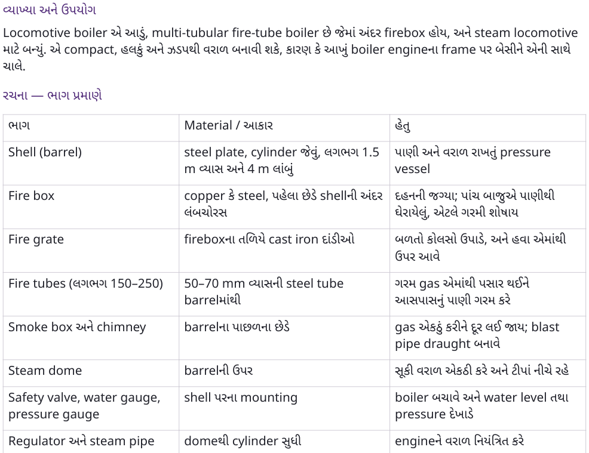
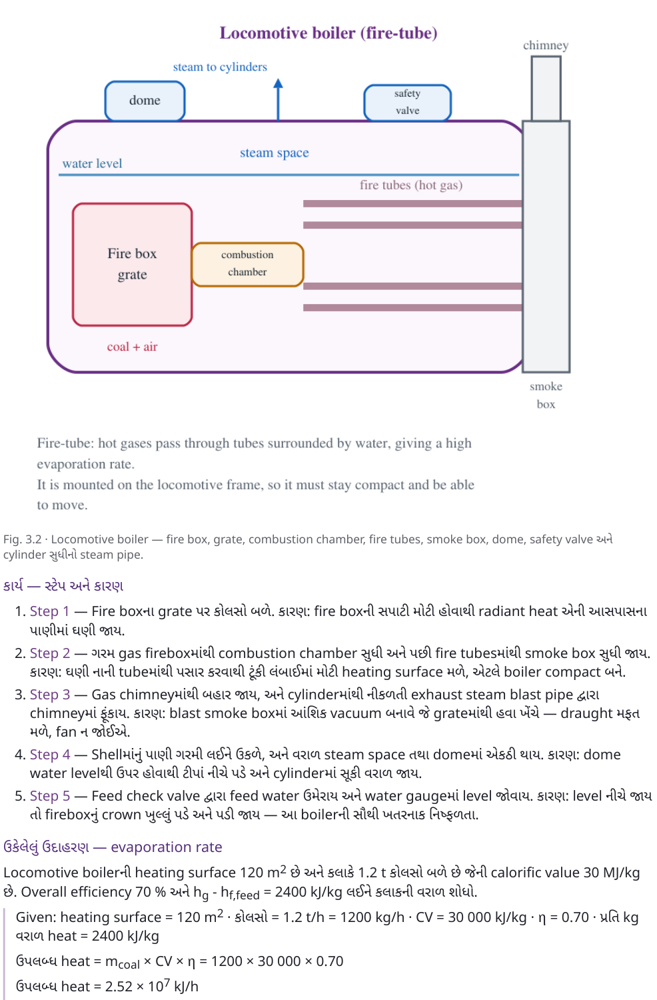
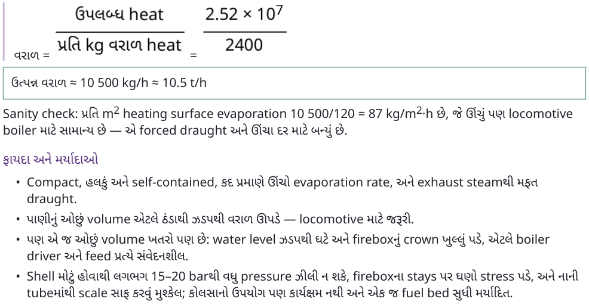
Q.3 (a) · List the factors affecting selection of boiler. · OR · 3 marks
Choosing a boiler means matching its design to the duty and to the site. The factors that decide the choice:
![Q.3 (a) OR: preserved source formula, table or diagram, page 42. Extracted text context (formula notation may be incomplete): Factor What it decides the capacity in kg/h and whether the load is steady or fluctuating — a fluctuating load needs a larger water volume (fire-tube) Steam demand and its variation above about 20 bar a water-tube boiler is needed; superheat if the steam drives a turbine Working pressure and temperature coal, oil, gas or biomass decides the furnace and the grate type; a cheap local fuel can pay for a less efficient boiler Fuel available and its cost the boiler with an economiser and air preheater costs more but saves fuel every day Efficiency and running cost a packaged water-tube unit is tall; a Lancashire boiler needs a long brick setting Floor area and headroom Feed water quality hard water needs a bigger blow-down and easier cleaning, so large- tube designs are preferred whether one spare boiler must be kept, and how the load is shared between units Load factor and stand- by IBR registration, the pressure part class, and the operator skill available Safety, code and statutory limits capital cost, erection, and the 15–20 year running cost have to be compared, not the price tag alone Initial cost against life cost](summer-2026.assets/0058.webp)
Example: a plant needing 20 t/h of steam at 45 bar for a turbine must use a water-tube boiler with a superheater and an economiser, whatever the fuel; a small plant needing 2 t/h at 7 bar for process heating is better served by a packaged fire-tube boiler because it is cheap and simple.
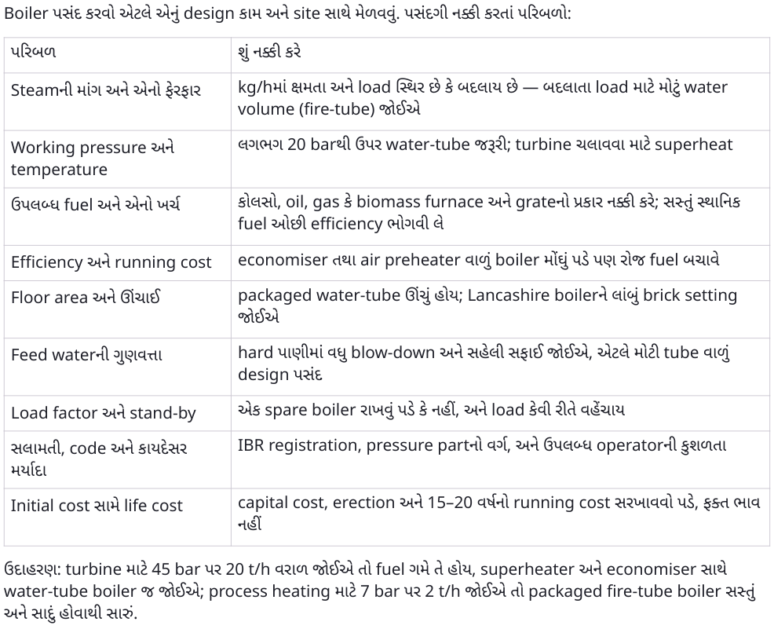
Q.3 (b) · Classify steam generators and explain any one. · OR · 4 marks
Classification
Basis Types Examples
fire-tube · water-tube locomotive, Lancashire / Babcock and Wilcox, Stirling
By the position of the water and the gas
By the axis horizontal · vertical Lancashire and B&W; horizontal; vertical cross-tube
single-tube · multi-tube Cornish (single flue) / locomotive and B&W;
By the number of tubes
By the firing internally fired · externally fired locomotive (internal firebox) / Lancashire (external grate)
By the draught natural draught · forced draught · induced draught · balanced
Lancashire natural / packaged unit with FD and ID fans

One type explained — the Babcock and Wilcox boiler (water-tube)
The Babcock and Wilcox boiler is a horizontal, multi-tubular, water-tube boiler with natural circulation, and it is the classic industrial water-tube design.
![Q.3 (b) OR: preserved source formula, table or diagram, page 44. Extracted text context (formula notation may be incomplete): Part Purpose Steam and water drum the horizontal drum on top; separates steam and holds the water level Water tubes (inclined at 10– 15°) the water is inside; the incline helps natural circulation Headers (upper and lower) connect the tubes to the drum and make the circulation loop Furnace and grate below the tube bank; the gas rises across the tubes Baffles make the gas travel in a zig-zag across the tubes, so it gives up more heat Superheater in the gas path before the outlet, to superheat the steam Economiser and air preheater in the gas path after the tube bank, to recover the waste heat](summer-2026.assets/0061.webp)
Working — step and reason
1. Step 1 — Coal burns on the grate and the hot gas rises. Reason: the furnace is below the tube bank, so the gas must cross the tubes on its way out.
2. Step 2 — The gas is made to zig-zag by the baffles. Reason: a longer path and a higher gas velocity across the tubes raise the heat transfer.
3. Step 3 — Water in the inclined tubes absorbs the heat and becomes a steam–water mixture, which rises to the drum. Reason: the mixture is lighter than the water in the down-comers, so natural circulation sets up without a pump.
4. Step 4 — Steam is separated in the drum and drawn off; the water returns down the rear tubes. Reason: a continuous circulation keeps the tube metal cool and prevents overheating.
5. Step 5 — The gas finally passes the economiser and the air preheater. Reason: the feed water and the combustion air are preheated, which raises the overall efficiency by 5–8 %.
Advantages and limitations
• It can take high pressure (up to about 60 bar) because the tubes are small in diameter, and it can be built very large — 100 t/h and more.
• The heating surface is large for the floor area, the tubes can be replaced individually, and the boiler can be dismantled and transported in parts.
• But it needs pure feed water, because scale in small tubes causes rapid overheating; it needs more skilled operation and more auxiliaries (fans, pumps), and the initial cost is higher than a fire-tube boiler.
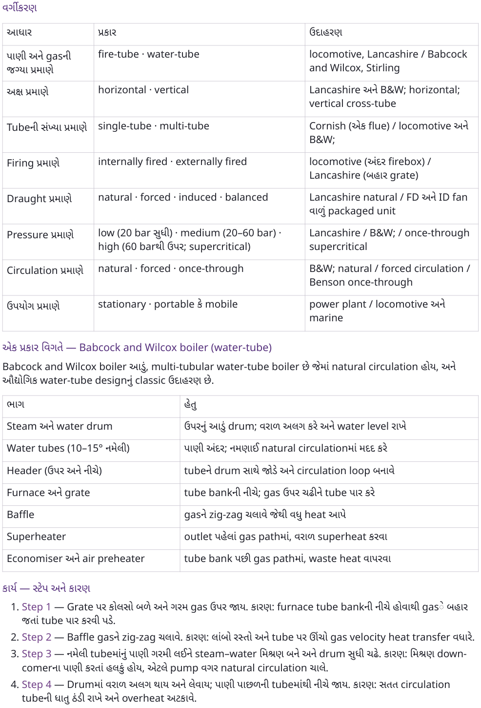
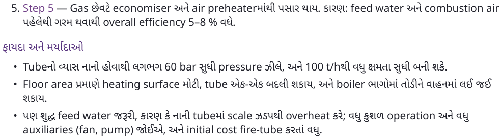
Q.3 (c) · Explain construction and working of Lancashire boiler with sketch · OR · 7 marks
Definition
The Lancashire boiler is a horizontal, stationary, fire-tube boiler with two large internal flues and an external furnace. It is the classic low-pressure industrial boiler for steady steam demand, and it is still found in process plants and in sugar and textile mills.
Construction — part by part
Part Description Purpose
Shell horizontal cylindrical steel shell, 2–3 m diameter and 7– 9 m long
holds the water and steam under pressure
Furnace grate (external) at the front, outside the shell, in a brick chamber
the coal burns here and the hot gas enters the flues
Fire brick and baffle (fire bridge) a brick wall at the end of the grate
turns the gas down into the flue and stops the fuel being drawn in
First flue (internal) a large corrugated steel tube through the lower part of the shell
carries the hot gas from the grate to the back and heats the water around it
Second flue (internal) a second tube above the first, running back to the front
returns the gas to the front, so the heating surface is doubled
Smoke box and chimney at the front after the second flue
collects the gas and creates the natural draught
Dome and safety valve on the shell
on top collects dry steam and relieves excess pressure
Mountings: water gauge, pressure gauge, feed check valve, blow-down
on the shell show and control the level, pressure, feed and the dissolved solids
Brick setting around the shell insulates the boiler and forms the gas passages
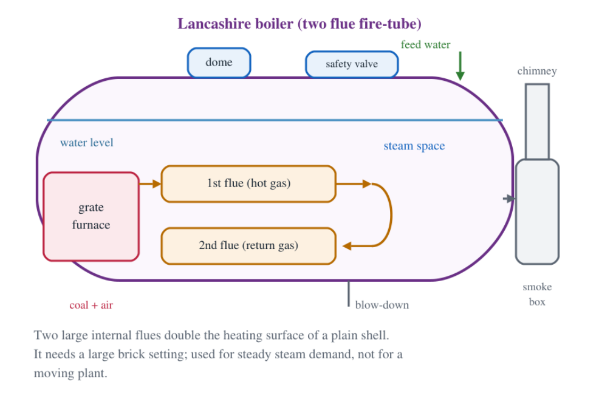
Fig. 3.3 · Lancashire boiler — grate and furnace, first and second flue, smoke box, chimney, dome, safety valve, feed water and blow-down.
Working — step and reason
1. Step 1 — Coal is burnt on the grate in the external furnace. Reason: the brick furnace allows a long flame and a cheap fuel, and the flame does not touch the cold shell directly.
2. Step 2 — The hot gas passes down the first flue to the back of the boiler. Reason: the flue is surrounded by water, so heat is transferred along its whole length, and the corrugations give extra surface and allow for expansion.
3. Step 3 — At the back the gas turns and travels forward through the second flue. Reason: the return pass doubles the heating surface, so more heat is taken from the same gas.
4. Step 4 — The gas leaves through the smoke box to the chimney. Reason: the chimney gives the natural draught that pulls the air through the grate.
5. Step 5 — Water boils and steam collects in the dome; feed is added and the level is watched. Reason: the large water volume stores heat, so the boiler rides out a fluctuating steam demand.
Worked example — efficiency by the indirect method
A Lancashire boiler burns 800 kg/h of coal of calorific value 25 MJ/kg. The flue gas carries away 12 % of the heat, the water vapour in the gas 5 %, radiation and unburnt losses 6 %. Find the boiler efficiency and the steam raised, taking hg − hfeed = 2300 kJ/kg.
Given: coal = 800 kg/h · CV = 25 000 kJ/kg · flue loss = 12 % · vapour loss = 5 % · radiation and unburnt = 6 % · heat per kg steam = 2300 kJ/kg
Total loss = 12 + 5 + 6 = 23 %
Efficiency η = 100 − 23 = 77 %
Heat to steam = 800 × 25 000 × 0.77 = 1.54 × 107 kJ/h
Efficiency = 77 %; steam raised ≈ 6700 kg/h ≈ 6.7 t/h
Sanity check: 6.7 t/h from 0.8 t/h of coal is about 8.4 kg of steam per kg of coal — a normal figure for a Lancashire boiler.
Advantages and limitations
• Simple, robust and cheap to build and repair, with a large water and steam storage, so it answers a fluctuating load well. It can burn cheap fuel on a large grate.
• The gas path is long and the boiler is easy to clean through the flues, which matters with moderately hard water.
• But it is very heavy for its output, it needs a large brick setting and a big floor area, and it cannot be moved once erected.
• It is limited to about 15–20 bar because the shell is large, it is slow to raise steam from cold, and the efficiency is lower than a modern water-tube boiler because the exit gas is hot.
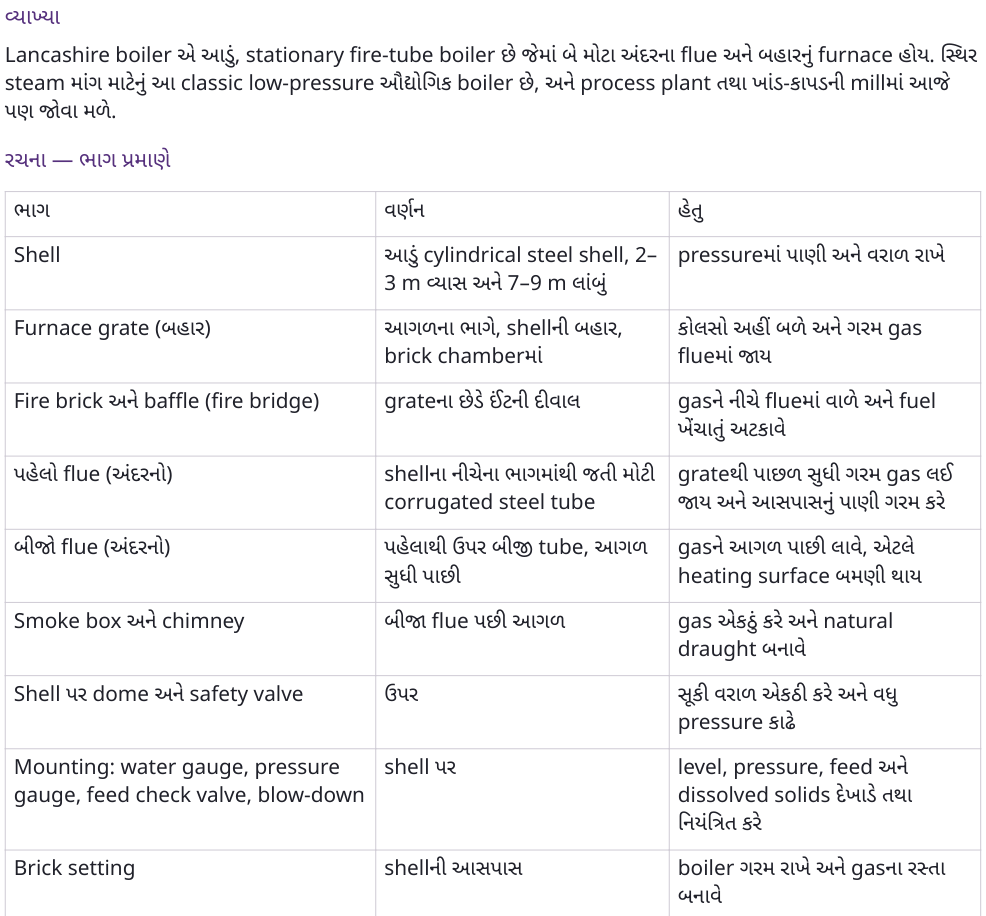
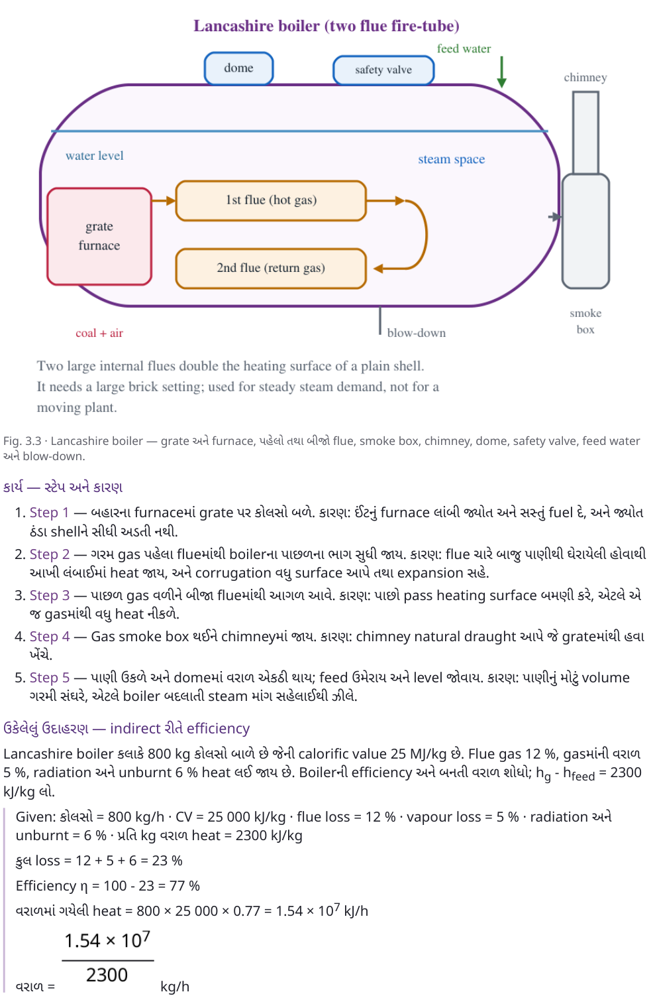
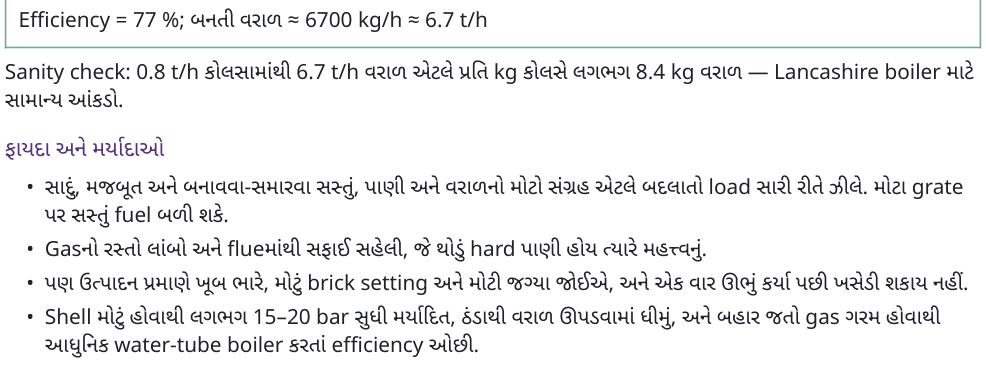
Question 4
Q4 · Compressors, economiser, steam trap, boiler accessories and mountings
Q.4 (a) · Draw a neat Figure of Rotary compressors · 3 marks
A rotary compressor is a positive-displacement or dynamic machine in which the air is compressed by the rotation of a rotor inside a casing, without any reciprocating piston. The two common positive-displacement types are the sliding-vane and the twin-screw.
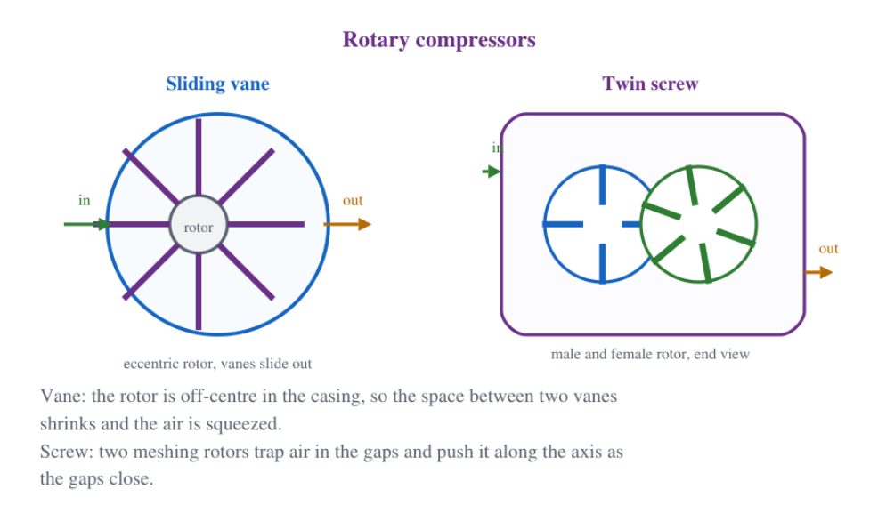
Fig. 4.1 · Rotary compressors — sliding vane (eccentric rotor with vanes) and twin screw (two intermeshing rotors in a casing).
Labelled parts
![Q.4 (a): preserved source formula, table or diagram, page 51. Extracted text context (formula notation may be incomplete): Type Parts How the air is compressed Sliding vane casing, eccentric rotor, radial vanes, inlet port, outlet port the rotor is off-centre, so the space between two vanes shrinks as it turns from the inlet to the outlet Twin screw casing, male (4-lobe) rotor, female (6-lobe) rotor, inlet and outlet ports the meshing rotors trap a pocket of air and reduce its volume as the pocket moves axially to the outlet](summer-2026.assets/0070.webp)
Note: a rotary compressor gives a steady, pulse-free delivery and is compact, which is why it is used for instrument air and for large flows at moderate pressure.
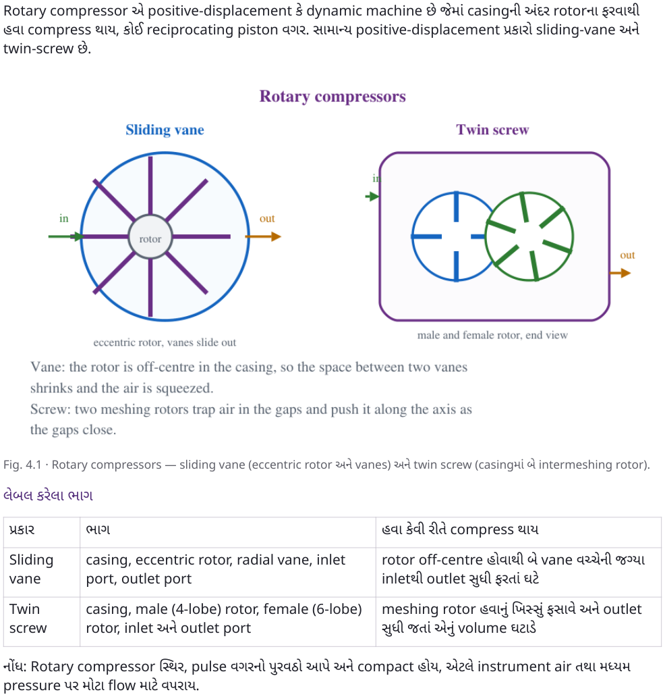
Q.4 (b) · Explain economizer and steam trap · 4 marks
Economiser
An economiser is a heat exchanger placed in the flue-gas path after the boiler, in which the feed water is heated by the leaving flue gas. It is called an economiser because it economises fuel: every 6 °C rise in feed water temperature saves about 1 % of the fuel.
![Q.4 (b): preserved source formula, table or diagram, page 52. Extracted text context (formula notation may be incomplete): Part Purpose Cast-iron or steel gilled tubes in a bank give the large surface needed to take heat from a gas that is only 250–400 °C Headers and return bends connect the tubes and let the water travel up and down in passes Soot blowers blow the soot off the gas side, because a soot layer of 1 mm can cut the heat transfer by 10 % Bypass duct and damper protect the economiser during start-up, when the gas is wet and corrosive Safety valve and vent on the water side protect the economiser if the feed is stopped while the gas is still hot](summer-2026.assets/0072.webp)
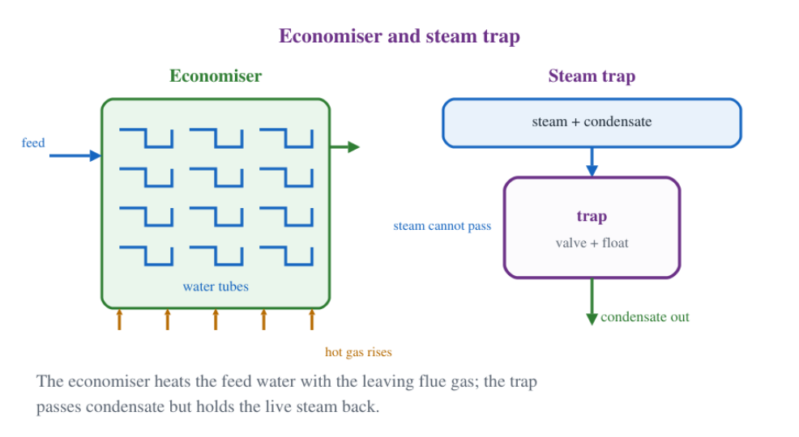
Fig. 4.2 · Economiser tubes in the gas path, and a steam trap on a steam line.
Working of the economiser
1. Step 1 — Feed water from the pump enters at the bottom and flows up through the tubes. Reason: counter-flow gives the best heat transfer, so the warmest water meets the hottest gas.
2. Step 2 — The flue gas passes outside the tubes at 250–400 °C. Reason: the gas is still hot enough to heat the water but too cool to be useful in the furnace.
3. Step 3 — The feed water leaves 40–60 °C hotter and enters the drum. Reason: this heat would otherwise have gone up the chimney, so less fuel is burnt for the same steam.
Steam trap
A steam trap is an automatic valve that lets condensate, air and other non-condensable gases out of a steam line or a steam-heated equipment, but holds back the live steam. Without it, condensate
collects at the bottom of the line, causes water hammer, and reduces the heating; if it were simply a hole, steam would escape and be wasted.
![Q.4 (b): preserved source formula, table or diagram, page 53. Extracted text context (formula notation may be incomplete): Type How it works Use Thermodynamic a disc closes on the flash steam that forms as the condensate passes the orifice main steam lines, tracing Ball float + thermostatic air vent a float opens the valve to let the condensate out and closes on steam heat exchangers and vessels with a large condensate load Inverted bucket a bucket floats over the condensate and falls to open the valve, then fills and rises high-pressure and superheated steam lines Thermostatic (bimetallic) the expansion of a bimetallic element opens the valve in the cold condensate radiators and small heaters](summer-2026.assets/0074.webp)
Worked example — fuel saved by an economiser
A boiler makes 10 t/h of steam, burning 800 kg/h of coal. The feed water enters the economiser at 40 °C and leaves at 100 °C; cp = 4.18 kJ/kg·K and coal CV = 25 MJ/kg. Find the heat recovered and the coal saved.
Given: steam = 10 000 kg/h · feed heated from 40 °C to 100 °C · cp = 4.18 kJ/kg·K · CV = 25 000 kJ/ kg
Heat recovered = m · cp · ΔT = 10 000 × 4.18 × 60
Heat recovered = 2.508 × 106 kJ/h
Heat recovered ≈ 2.51 × 106 kJ/h; coal saved ≈ 100 kg/h
Sanity check: 100 kg out of 800 kg is a saving of 12.5 %, which matches the well-known rule that a 60 °C rise saves about 10 % of the fuel.
Limitations
• An economiser works only if you keep it clean: soot on the gas side and scale on the water side both cut the saving.
• The gas-side tubes can drop below the dew point during start-up, and the condensation of acid is corrosive, so a bypass is needed.
• A steam trap that fails open wastes steam; one that fails closed floods the line. Traps therefore need routine testing, by sound, by temperature or with an ultrasonic tester.
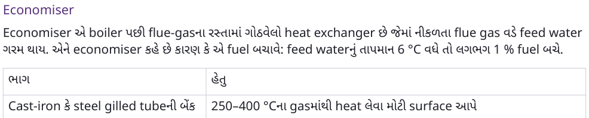
Q.4 (c) · Explain boiler Accessories and mountings · 7 marks
The difference
Boiler mountings are the fittings mounted on the boiler shell itself, and they are needed for its safe operation and for control of the steam and water — they are part of the pressure part and are covered by the boiler code. Boiler accessories are the auxiliary equipment installed around the boiler to improve its efficiency and to handle the air, gas, water and fuel; they are not pressure parts of the shell.
Mountings
Mounting Function Why it is compulsory
Safety valve (two, usually)
opens at the set pressure and lets the steam out
the only protection against over- pressure and a burst boiler
shows the water level in the drum a low level uncovers the heating surface and causes a collapse
Water level indicator (gauge glass)
Pressure gauge shows the steam pressure the operator must know the pressure at all times
Fusible plug a low-melting plug in the furnace crown that melts if the water level falls
extinguishes the fire before the crown plate overheats
Feed check valve lets the feed water in and stops it flowing back
protects the pump and keeps the water level
Accessories
![Q.4 (c): preserved source formula, table or diagram, page 56. Extracted text context (formula notation may be incomplete): Accessory Where it sits What it does Economiser in the flue-gas path after the boiler heats the feed water from the waste gas, saving 8–12 % fuel Air preheater last in the gas path heats the combustion air, so the furnace temperature is higher and the gas leaves cooler Superheater in the gas path before the outlet dries and superheats the steam for the turbine Feed water pump before the economiser forces the feed water into the drum against the boiler pressure at the air inlet and after the air preheater supply the combustion air and pull the gas through the boiler Forced / induced draught fans Soot blowers on the tube banks blow the soot off the gas side, keeping the heat transfer up on the steam main remove the condensate and droplets before the steam reaches the turbine Steam trap and separators before the feed pump softens or demineralises the water, which prevents scale and corrosion Water treatment plant](summer-2026.assets/0080.webp)
Working — how the two together keep the boiler safe and efficient
1. Step 1 — The feed pump pushes water through the economiser and the feed check valve into the drum. Reason: the feed must overcome the boiler pressure, and the check valve stops the back-flow when the pump stops.
2. Step 2 — The water level is watched in the gauge glass and the pressure in the gauge. Reason: these two readings are the only direct information about the state of the boiler.
3. Step 3 — If the level falls too far, the fusible plug melts and the safety valve and the operator act. Reason: the plug is the last automatic defence against a furnace explosion.
4. Step 4 — The air preheater and the fans supply hot air, the fuel burns, and the gas passes the superheater, the tube bank, the economiser and the air preheater. Reason: each of these takes heat from the gas before it reaches the chimney.
5. Step 5 — The blow-down valve is opened at intervals. Reason: the dissolved solids left behind by the evaporation must be removed, or they cause priming, foaming and scale.
Worked example — blow-down required
A boiler evaporates 10 000 kg/h of water. The feed water has 400 ppm dissolved solids and the boiler water must be held at 3000 ppm. Find the blow-down rate.
Given: evaporation = 10 000 kg/h · feed TDS = 400 ppm · boiler water limit = 3000 ppm
Blow-down ≈ 1538 kg/h, about 15 % of the evaporation
Sanity check: a blow-down of 5–10 % is normal, so 15 % shows that this feed water is rather salty — which is the reason a softener or demineraliser is put before the boiler.
Limitations
• The mountings are only as good as their maintenance: a gauge glass that is isolated, a safety valve that is stuck or a fusible plug that has already melted but not been replaced gives false confidence.
• Accessories raise the efficiency but also add pressure drop on the gas side, and they cost money and need space; the economiser and air preheater also risk acid corrosion at start-up.
• A very high blow-down, used to control the solids, wastes heat — which is why water treatment is cheaper than blow-down.
Q.4 (a) · Define Compressed Air, Blower Air and Fan Air · OR · 3 marks
These three names describe air moved by a machine, and they are separated by the pressure ratio the machine develops, which is also what decides the type of machine.
![Q.4 (a) OR: preserved source formula, table or diagram, page 59. Extracted text context (formula notation may be incomplete): Term Definition Pressure rise Machine used Fan air air moved at almost constant density for ventilation or for a small pressure difference up to about 0.1 bar (compression ratio 1.1) centrifugal or axial fan Blower air air delivered at a moderate pressure, where the density still changes little about 0.1–1 bar (ratio 1.1–2) Roots blower, centrifugal blower air compressed to a much higher pressure and stored, so it carries energy for tools and instruments above 1 bar, typically 6–10 bar (ratio 3–10) reciprocating, rotary screw or centrifugal compressor Compressed air](summer-2026.assets/0086.webp)
Example: a cooling tower uses a fan to move a large volume of air at a few millibar; a sewage aeration tank uses a blower at about 0.6 bar; and the workshop compressed air line runs at 7 bar to drive a pneumatic drill. The same air, three different machines, because the pressure ratio is different.
Worked check — compression ratio
Find the compression ratio for a fan that raises the pressure from 1.0 to 1.05 bar absolute, a blower to 1.8 bar absolute, and a compressor to 8 bar absolute.
Given: P1 = 1.0 bar · Pfan = 1.05 bar · Pblower = 1.8 bar · Pcompressor = 8 bar
Ratios 1.05, 1.8 and 8 — which is why a fan, a blower and a compressor are different machines
Sanity check: the usual dividing line in practice is a ratio of about 1.1 for a fan and about 2 for a blower, so the three values fall in the right bands.
Q.4 (b) · Sketch and describe the figure of super heater. · OR · 4 marks
Definition
A superheater is a bank of tubes placed in the flue-gas path of a boiler in which the saturated steam from the drum is heated above its saturation temperature, at constant pressure. It dries the steam and raises its temperature, which raises the cycle efficiency and prevents erosion and corrosion in a
turbine.
Fig. 4.3 · Convection superheater — serpentine coils in the gas pass, saturated steam in and superheated steam out.
Description
![Q.4 (b) OR: preserved source formula, table or diagram, page 61. Extracted text context (formula notation may be incomplete): Part Purpose Serpentine coils of alloy steel tube give a long path in a short space, so the steam picks up heat in a small gas pass Inlet header (saturated steam) distributes the steam equally to all the coils Outlet header (superheated steam) collects the steam and takes it to the turbine Support and spacers hold the coils against vibration and thermal expansion Attemperator (desuperheater) sprays a little water into the steam to control the final temperature, which matters for the turbine metal Gas baffles make the gas cross the coils at the right velocity](summer-2026.assets/0093.webp)
Working — step and reason
1. Step 1 — Saturated steam leaves the drum and enters the inlet header. Reason: the steam is first separated from the water, because droplets would carry salts into the superheater and scale it.
2. Step 2 — The steam passes through the serpentine coils in the hot gas stream at 600–900 °C. Reason: the gas is hotter than the steam, so heat flows from gas to steam without any flame touching the tube.
3. Step 3 — The steam leaves 30–60 °C above saturation. Reason: this degree of superheat is enough to keep the last stages of the turbine dry, and the tube metal stays within its creep limit.
4. Step 4 — The attemperator trims the outlet temperature. Reason: the gas temperature varies
with the load, and the turbine cannot accept a steam temperature above its design value.
Worked example — superheat added
Steam at 20 bar leaves the drum dry saturated at 212 °C with hg = 2799 kJ/kg. It leaves the superheater at 350 °C with h = 3060 kJ/kg, at a rate of 20 t/h. Find the heat added in the superheater.
Given: h1 = 2799 kJ/kg · h2 = 3060 kJ/kg · m = 20 000 kg/h · Tsat = 212 °C · Tout = 350 °C
Degree of superheat = 350 − 212 = 138 °C
Formula: Q = m (h2 − h1)
Substitute: Q = 20 000 × (3060 − 2799) = 20 000 × 261
Heat added in the superheater = 5.22 × 106 kJ/h ≈ 1450 kW
Sanity check: 261 kJ/kg is about 10 % of the total enthalpy of the steam, which is the normal share taken by a convection superheater — correct.
Types and limitations
• Convection superheaters sit in the tube bank and gain superheat as the load rises; radiant superheaters sit in the furnace and lose superheat as the load rises; a combined design is used so the outlet temperature stays nearly flat over the load range.
• The tubes run hotter than any other part of the boiler, so they must be of an alloy steel and must have steam flowing through them at all times — no steam flow means a burnt-out tube.
• Superheated steam has a lower heat-transfer coefficient than wet steam, so the superheater needs a large surface; and the steam is dry, so a superheater cannot be protected by the evaporating water in the way the water walls are.
Q.4 (c) · Give Comparison of Reciprocating, Rotary vane, Rotary screw and Centrifugal type of Air compressor · OR · 7 marks
The four types
Reciprocating: a piston in a cylinder draws in air, compresses it and pushes it out — positive displacement. Rotary vane: an eccentric rotor with sliding vanes squeezes the air between the vanes and the casing. Rotary screw: two intermeshing rotors trap the air and reduce its volume along the axis. Centrifugal: a high-speed impeller gives the air a velocity, and a diffuser converts that velocity into pressure — dynamic compression.
Comparison
Point Reciprocating Rotary vane Rotary screw Centrifugal
Principle positive displacement, piston
positive displacement, sliding vanes
positive displacement, meshing rotors
dynamic, impeller + diffuser
Pressure very high, up to 1000 bar in stages; usual 6–15 bar
low to medium, up to about 8 bar
medium, 7–13 bar in one or two stages
low to medium, 2–8 bar per stage; high with many stages
Capacity (free air)
small to medium, up to about 3000 m3/h
small, up to about 2000 m3/h
medium to large, up to about 30 000 m3/h
very large, up to 200 000 m3/h and more
Flow pulsating; needs a receiver and a dampener
steady very steady continuous and smooth
![Q.4 (c) OR: preserved source formula, table or diagram, page 65. Extracted text context (formula notation may be incomplete): Efficiency highest at high pressure; volumetric efficiency falls with clearance moderate; falls as the vanes wear good over a wide range; better than vane high only near the design point, poor at part load Speed low, 300–1000 rpm moderate, 1000– 3000 rpm high, 3000–20 000 rpm very high, 10 000–50 000 rpm Size and weight bulky and heavy for the flow; needs a strong foundation compact and light compact, about half the size of a reciprocating unit small and light for a very large flow Air quality oil is carried over from the cylinder walls oil from the vanes and casing oil-flooded types carry oil; oil-free types are available oil-free delivery is normal Maintenance valves, rings and bearings; many wearing parts vane wear, so periodic vane and seal replacement few parts; the rotors do not touch, so long life very few parts, but sensitive to dirt and to surge Delivery temperature high, needs an aftercooler high moderate (oil- flooded is cooler) low to moderate Control unloading, clearance pockets, speed modulating valve, blow-off slide valve, variable speed, load/unload inlet guide vanes, blow-off to avoid surge Cost cheapest for small capacity and high pressure low first cost for small capacity higher first cost, but cheaper per m3 at large capacity high first cost, cheapest at very large flow Typical use workshop air, high- pressure process, gas compression, instrument air small packaged units, mobile tyre inflation plant air, instrument air, refrigeration compressors large plant air, blast furnace air, ventilation, process air](summer-2026.assets/0097.webp)
How to choose — step and reason
1. Step 1 — Fix the flow and the pressure first. Reason: these two numbers eliminate most types before any cost comparison — below 8 bar and above 5000 m3/h, a centrifugal is the natural choice.
2. Step 2 — Look at the duty cycle. Reason: a compressor that runs at part load for most of the day is cheaper as a screw with a slide valve than as a centrifugal, whose efficiency collapses away from the design point.
3. Step 3 — Check the air quality needed. Reason: an oil-free process needs a screw or a centrifugal; a reciprocating unit needs a good filter and a dryer.
4. Step 4 — Compare the life cost, not the price. Reason: the electricity is about 70–80 % of the cost of compressed air over ten years, so a 5 % better efficiency beats a lower price tag.
Worked example — specific power
A plant needs 20 m3/min of free air at 7 bar. A reciprocating unit takes 110 kW and a screw unit takes 100 kW. Find the specific power of each and the annual saving at 6000 h/y and ₹ 8 per kWh.
Given: flow = 20 m3/min · Precip = 110 kW · Pscrew = 100 kW · hours = 6000 per year · tariff = ₹ 8/ kWh
Power saved = 110 − 100 = 10 kW
Annual energy saved = 10 × 6000 = 60 000 kWh
Annual saving = 60 000 × 8 = ₹ 4 80 000
Specific power 5.5 against 5.0 kW per m3/min; annual saving ≈ ₹ 4.8 lakh
Sanity check: a specific power of 5–6 kW per m3/min at 7 bar is the accepted figure for industrial compressors, so both machines are in the normal range and the screw is the better buy.
Limitations
• A reciprocating unit is limited by its valves and by the clearance volume, and it delivers pulsating air, so a receiver is compulsory.
• A vane compressor loses efficiency as the vanes and the casing wear, so it is used mainly in small and mobile units.
• A screw compressor needs clean oil (in the flooded type) and its rotors must not touch, so the timing gears and the seals are critical.
• A centrifugal compressor surges at low flow, so it must always be run with a blow-off or inlet guide vane control, and it cannot be restarted against a full discharge line.
Question 5
Q5 · Refrigerants, COP and TOR, steam-jet and vapour-compression refrigeration
Q.5 (a) · Write a short note on primary and secondary refrigerants · 3 marks
Primary refrigerant
A primary refrigerant is the working fluid of the refrigeration cycle: it is the fluid that is compressed, condensed and evaporated, and it absorbs heat from the space directly at the evaporator. Examples: ammonia (R-717), carbon dioxide (R-744), the halocarbons R-12, R-22, R-134a and R-410A, and the hydrocarbons propane and isobutane.
Secondary refrigerant
A secondary refrigerant (brine or coolant) is a fluid that is cooled by the primary refrigerant in a heat exchanger and then pumped to the place where the cooling is needed, returning warm. It never goes through the compressor. It is used when the load is far from the machine room, when a leak in the cooled space would be dangerous (ammonia in a food store), or when several cold rooms must run from one plant. Examples: calcium chloride brine, sodium chloride brine, glycol– water, and in air conditioning simply chilled water.
Comparison
Point Primary refrigerant Secondary refrigerant
Role the working fluid of the cycle a heat-carrier between the plant and the load
![Q.5 (a): preserved source formula, table or diagram, page 69. Extracted text context (formula notation may be incomplete): Circulation through compressor, condenser, expansion valve and evaporator pumped through the cooling coils only Examples R-134a, ammonia, CO2, propane CaCl2 brine, glycol, chilled water Quantity needed small, in a closed circuit large, filling the whole pipe network Leak risk leak is dangerous, especially ammonia leak is less serious, but brine corrodes Cost expensive per kg cheap](summer-2026.assets/0103.webp)
Example: a dairy cools its milk with chilled water at 2 °C. R-134a in the machine room is the primary refrigerant, and the chilled water pumped to the milk chiller is the secondary refrigerant.
Q.5 (b) · List out primary refrigerant and explain any one. · 4 marks
List of primary refrigerants
![Q.5 (b): preserved source formula, table or diagram, page 70. Extracted text context (formula notation may be incomplete): Group Refrigerant Boiling point at 1 atm Note Halocarbon R-12 (CCl2F2) −29.8 °C CFC, banned by the Montreal Protocol Halocarbon R-22 (CHClF2) −40.8 °C HCFC, being phased out Halocarbon R-134a (CH2FCF3) −26.1 °C HFC, the common replacement for R-12 Halocarbon blend R-410A (R-32/R-125) −51 °C HFC blend for air conditioning Inorganic Ammonia (R-717, NH3) −33.3 °C excellent properties, toxic Inorganic Carbon dioxide (R-744, CO2) −78.5 °C (sublimes) safe, but very high pressure Hydrocarbon Propane (R-290), isobutane (R-600a) −42 °C, −11.7 °C good properties, flammable Inorganic Water (R-718) 100 °C used in absorption systems only](summer-2026.assets/0105.webp)
One explained — ammonia, R-717
Ammonia is the best-known inorganic refrigerant and is still the standard for large industrial refrigeration, cold stores and ice plants.
• Properties: it has a very high latent heat of vaporisation (about 1370 kJ/kg at −15 °C, several times that of R-134a), so the mass flow for a given duty is small; it is cheap, easily available, and it has a small global warming potential and zero ozone depletion potential.
• Behaviour: it is detectable by smell at 5 ppm, which is a safety advantage, and it does not mix with oil in the usual way, so an oil separator is needed.
• Materials: it attacks copper and its alloys, so steel and iron are used throughout; it is not compatible with the usual copper tubing.
• Use: cold storage, ice plants, dairy and brewery chilling, and large ammonia absorption plants.
Worked example — mass flow of refrigerant
A plant of 50 TR capacity works with ammonia at an evaporating temperature of −15 °C, where the latent heat is 1370 kJ/kg. Compare the refrigerant mass flow with R-134a, whose latent heat is about 210 kJ/kg at the same condition. Take 1 TR = 3.517 kW.
Given: capacity = 50 TR · 1 TR = 3.517 kW · hfg,NH3 = 1370 kJ/kg · hfg,R134a = 210 kJ/kg
Cooling load = 50 × 3.517 = 175.9 kW = 175.9 kJ/s
Ammonia needs 0.128 kg/s; R-134a needs 0.838 kg/s — about 6.5 times more
Sanity check: the ratio of the latent heats, 1370/210 = 6.5, is exactly the ratio of the mass flows, so
the arithmetic is consistent and the ammonia circuit is much smaller.
Limitations
Ammonia is toxic and flammable in a narrow range, so the machine room needs gas detection, emergency ventilation and a water spray; it corrodes copper, and it is not suitable for small domestic units, where the hydrocarbons or R-134a are used instead.
Q.5 (c) · Explain Steam-jet refrigeration system · 7 marks
Definition and principle
A steam-jet (ejector) refrigeration system produces chilled water without any compressor. The compressor is replaced by a steam ejector: high-pressure motive steam expands through a converging–diverging nozzle, its velocity rises to over 1000 m/s and its pressure falls below the pressure in the flash chamber. That low pressure draws vapour out of the flash chamber, so the water in the chamber boils (flashes) at a low temperature and cools itself. In this way water at 5–10 °C is produced with steam as the only energy input.
Construction — part and purpose
Part Purpose
Steam nozzle (converging– diverging)
expands the motive steam to a very high velocity and a low pressure
Mixing chamber and diffuser (the ejector)
the high-velocity steam drags the vapour along, and the diffuser converts the velocity back into pressure
Flash chamber (evaporator) holds water at 5–10 °C; the vapour is drawn off, so the remaining water cools
Chilled-water pump circulates the chilled water to the cooling load
Condenser (surface or barometric)
condenses the mixture of motive steam and vapour at 35–40 °C
Air removal (vacuum) system keeps the condenser pressure low; air leakage would raise it and spoil the vacuum
Cooling-water pump supplies the condenser cooling water
Fig. 5.1 · Steam-jet refrigeration — motive steam, ejector, flash chamber, condenser and chilled-water circuit.
Working — step and reason
1. Step 1 — Motive steam at 7–10 bar enters the nozzle and expands. Reason: the pressure energy converts to velocity, so a very low pressure is created at the nozzle exit — this low pressure is the "compressor suction".
2. Step 2 — The low pressure in the mixing chamber draws vapour from the flash chamber. Reason: the flash chamber is at a pressure corresponding to 5–10 °C, so vapour leaves the water to fill the ejector.
3. Step 3 — The water that is left behind loses its latent heat and cools to 5–10 °C. Reason: the heat of vaporisation comes from the water itself, so evaporation cools the remaining liquid — this is flashing.
4. Step 4 — The mixture of motive steam and vapour is compressed through the diffuser to the condenser pressure. Reason: the diffuser slows the mixture down, and the kinetic energy is converted back to pressure, so the vapour can be condensed at 35–40 °C against cooling water.
5. Step 5 — The condensate is pumped away and the chilled water is pumped to the load. Reason: the cycle is completed with liquid water, which is then flashed again.
Worked example — chilled water and motive steam
A steam-jet plant cools 20 000 kg/h of water from 15 °C to 8 °C. The flash chamber works at 8 °C, where the latent heat is 2400 kJ/kg, and the motive steam supplies 1.5 kg per kg of vapour evaporated. Find the vapour evaporated and the motive steam needed.
Given: water = 20 000 kg/h · cooled from 15 °C to 8 °C · cp = 4.18 kJ/kg·K · hfg = 2400 kJ/kg · motive
steam = 1.5 kg per kg vapour
Heat to be removed = m · cp · ΔT = 20 000 × 4.18 × (15 − 8) = 20 000 × 4.18 × 7
Heat = 585 200 kJ/h
Motive steam = 1.5 × 243.8 = 365.7 kg/h
Vapour evaporated ≈ 244 kg/h; motive steam required ≈ 366 kg/h
Sanity check: the vapour evaporated is only 244 kg out of 20 000 kg of water — a flash of about 1.2 %, which is the normal figure for a 7 °C drop.
Advantages
• No compressor and no moving part in the refrigeration circuit, so the plant is simple, cheap and reliable.
• It can use waste or low-grade steam, and it is safe where a refrigerant leak would be dangerous, because the working fluid is water.
• The capacity is controlled simply by a valve on the motive steam, and the plant is compact for a large water-chilling duty.
Limitations
• The COP is low, about 0.2–0.5, because a large quantity of motive steam is needed for a small cooling effect — it is economical only where steam is cheap or waste.
• It cannot go below about 2–5 °C, because the flash chamber would freeze; it is a water-chilling system, not a freezer.
• It needs a good vacuum and a reliable air-removal system, and the condenser must be large, because it condenses both the motive steam and the vapour.
• The ejector is efficient only at its design point, so a part-load duty is inefficient.
Q.5 (a) · List and Explain secondary Refrigerants. · OR · 3 marks
A secondary refrigerant is a fluid that is cooled by the primary refrigerant and then pumped to the load, so that the primary circuit stays in the machine room. The common ones:
![Q.5 (a) OR: preserved source formula, table or diagram, page 76. Extracted text context (formula notation may be incomplete): Secondary refrigerant Working range Note down to about −35 °C the standard brine for ice plants and cold stores; cheap and with a low freezing point, but very corrosive Calcium chloride brine (CaCl2) down to about −18 °C cheaper but limited to milder temperatures, because the eutectic is at −21 °C Sodium chloride brine (NaCl) down to −30 °C used in food plant (propylene glycol is safe) and in chilled-water systems that must not freeze Propylene glycol / ethylene glycol solution](summer-2026.assets/0115.webp)
Explanation — calcium chloride brine
A brine is a solution of a salt in water, used because a salt solution freezes at a much lower temperature than water. Calcium chloride brine at a 25 % concentration freezes at about −20 °C, so it can carry heat at −10 °C or −15 °C without freezing in the pipes.
• Properties: high density and specific heat, low freezing point, cheap.
• Corrosion: brine is very corrosive to steel, so an inhibitor is added and the circuit is kept alkaline (pH 8–9); air must not be allowed into the circuit, because dissolved oxygen makes the attack much worse.
• Circulation: the brine is cooled in a brine cooler by the evaporating primary refrigerant and then pumped to the ice cans or the cold-room coils.
• Use: ice plants, cold stores, and any large installation where the load must be kept away from the ammonia circuit.
• Limitation: the brine concentration must be checked, because a weak brine freezes and a strong one is more viscous and costs more pumping power.
Example: an ice plant makes ice in cans standing in a brine tank at −10 °C; the brine is a calcium chloride solution, and the primary refrigerant ammonia is confined to the machine room.
Q.5 (b) · Explain COP and TOR · OR · 4 marks
COP — coefficient of performance
The coefficient of performance of a refrigerator is the heat removed from the cold body divided by the work supplied to do it:
TOR — tonne of refrigeration
A tonne of refrigeration (TR or TOR) is the rate of cooling needed to freeze 1 tonne (1000 kg) of water at 0 °C into ice at 0 °C in 24 hours. It is the practical unit of capacity:
The latent heat of fusion of ice is 334 kJ/kg. In the older British unit, 1 TR = 12 000 Btu/h = 200 Btu/ min = 12000/3.968 = 3024 kcal/h.
Worked example
A refrigeration plant of 20 TR capacity works between an evaporator at −10 °C and a condenser at 35 °C, and its actual COP is 55 % of the Carnot COP. Find the cooling load in kW and the power required.
Given: capacity = 20 TR · 1 TR = 3.5 kW · TL = −10 °C = 263 K · TH = 35 °C = 308 K · actual COP = 0.55 × COPrev
Cooling load QL = 20 × 3.5 = 70 kW
Actual COP = 0.55 × 5.84 = 3.21
Cooling load = 70 kW; compressor power = 21.8 kW
Sanity check: 70 kW of cooling for 21.8 kW of power is a COP of 3.2, which is typical of a real plant in this temperature range, so the answer is consistent.
Why the two are used together
• COP compares the plant with the ideal and shows how good the design and the operation are; it does not depend on the size of the plant.
• TOR is a practical measure of how much cooling the plant can deliver, which is what the customer buys.
• The two together give the power: W = QL / COP. A plant with a low COP for the same TOR costs more to run, which is why an ammonia plant with COP 4 is preferred to an old R-12 plant with COP 2.5 for the same duty.
Q.5 (c) · Explain Vapour refrigeration cycle. · OR · 7 marks
Definition
The vapour-compression refrigeration cycle is the cycle in which a volatile liquid refrigerant is evaporated at low pressure to absorb heat, the vapour is then compressed, condensed at high pressure by rejecting heat, and expanded back to the evaporator pressure through a throttle. It is the cycle used in almost every domestic refrigerator, air conditioner and industrial chiller.
The four processes
![Q.5 (c) OR: preserved source formula, table or diagram, page 80. Extracted text context (formula notation may be incomplete): Process From → to What happens 1 → 2 · Compression evaporator to condenser the dry saturated vapour is compressed isentropically from P1 to P2; the temperature rises above the condenser temperature 2 → 3 · Condensation in the condenser heat QH is rejected at constant pressure, and the vapour condenses to a liquid 3 → 4 · Expansion through the expansion valve the liquid is throttled at constant enthalpy to the evaporator pressure, and part of it flashes off 4 → 1 · Evaporation in the evaporator the wet mixture boils at constant pressure and temperature, absorbing QL from the space](summer-2026.assets/0126.webp)
Fig. 5.2 · Vapour-compression cycle — compressor, condenser, expansion valve and evaporator.
Construction — part and purpose
![Q.5 (c) OR: preserved source formula, table or diagram, page 81. Extracted text context (formula notation may be incomplete): Part Purpose Compressor raises the pressure from the evaporator to the condenser pressure; it also circulates the refrigerant Condenser rejects the heat QH = QL + W to the cooling water or air, and liquefies the refrigerant Expansion valve (or capillary tube) drops the pressure and meters the flow; it also controls the evaporator filling Evaporator the cooling coil, where the refrigerant boils and takes heat from the space Receiver and drier stores the liquid and removes moisture, which would freeze at the expansion valve Oil separator and accumulator keeps the oil in the compressor and stops liquid refrigerant reaching the compressor](summer-2026.assets/0128.webp)
Working — step and reason
1. Step 1 — The wet vapour in the evaporator absorbs QL and leaves as dry saturated vapour at P1. Reason: a liquid must evaporate to absorb its latent heat, and the vapour must be dry so that no droplets damage the compressor.
2. Step 2 — The compressor raises the pressure to P2 and the temperature above the condenser temperature. Reason: heat can be rejected to the surroundings only if the refrigerant is hotter than the cooling medium.
3. Step 3 — In the condenser the vapour gives up QH and becomes liquid. Reason: at high
pressure the saturation temperature is high, so the vapour condenses with cooling water at 30– 35 °C.
4. Step 4 — The expansion valve drops the pressure to P1, and the liquid partially flashes. Reason: the pressure must fall to the evaporator pressure for the refrigerant to boil at a low temperature; the work done in the valve is zero, so enthalpy stays constant.
Worked example — full cycle calculation
An R-134a plant works between an evaporator at −10 °C and a condenser at 40 °C. The enthalpies are h1 = 392 kJ/kg, h2 = 428 kJ/kg, h3 = h4 = 249 kJ/kg. Find the refrigerating effect, the work, the COP and the capacity for a mass flow of 0.15 kg/s.
Given: h1 = 392 kJ/kg · h2 = 428 kJ/kg · h3 = h4 = 249 kJ/kg · m = 0.15 kg/s · 1 TR = 3.5 kW
Refrigerating effect = h1 − h4 = 392 − 249 = 143 kJ/kg
Work of compression = h2 − h1 = 428 − 392 = 36 kJ/kg
Cooling capacity = m × (h1 − h4) = 0.15 × 143 = 21.45 kW
COP = 3.97 and capacity ≈ 21.5 kW ≈ 6.1 TR
Sanity check: the Carnot COP for 263 K and 313 K is 263/50 = 5.26, and the actual 3.97 is 75 % of it — a good real plant, so the figures agree.
Advantages and limitations
• The COP is high, so it is the most efficient of the common cycles; the plant is compact, and the same cycle works for domestic and for large industrial duty.
• But it needs a compressor, which has moving parts and needs maintenance, and it is noisy.
• The refrigerant must be chosen with care: a CFC damages the ozone layer, an HCFC is being phased out, and a flammable hydrocarbon needs special precautions.
• Wet compression must be avoided, the condenser must not be fouled (or the pressure and power rise), and a leak of the refrigerant into the plant is a working hazard — the very reasons that limit the use of a vapour cycle inside a food store, where a secondary refrigerant is used instead.